Ultimate Starter Kit for Raspberry Pi Pico 2 WH
Product Information
-
Product Name: Ultimate Starter Kit for Raspberry Pi Pico 2 WH
-
Product SKU: KZ-0084
Product Description
Congratulations on purchasing the 52Pi Raspberry Pi Pico 2W Ultimate Starter Kit! This comprehensive kit is designed for beginners, educators, and hobbyists who want to explore the world of electronics and programming with the powerful Raspberry Pi Pico 2W microcontroller.
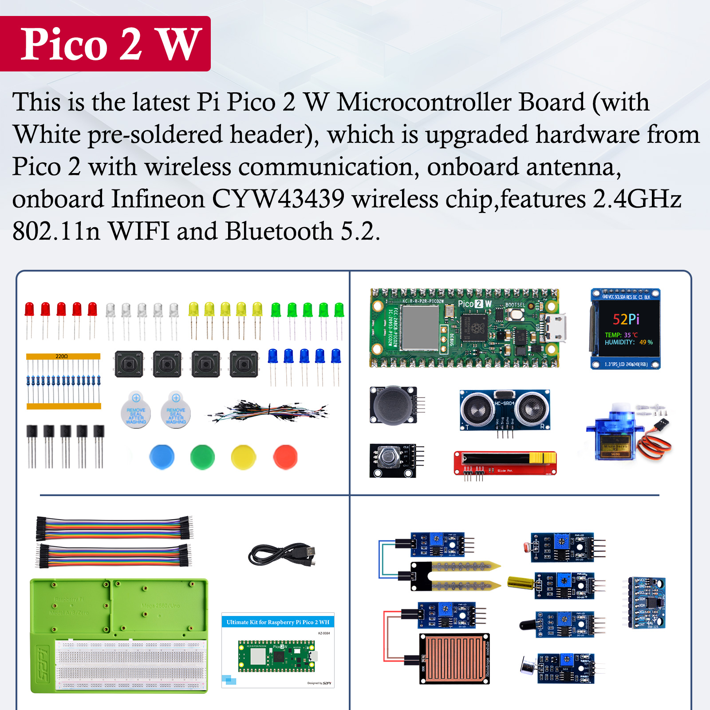
Kit Components
Our Ultimate Starter Kit includes a variety of sensors and components to help you learn and experiment:
| Item | Description | Quantity |
|---|---|---|
| Raspberry Pi Pico 2 WH | A WiFi-enabled microcontroller board with headers soldered on | 1 |
| LED Indicator | Red, white, blue, and yellow LEDs (5 each) | 20 |
| 220ohm Resistor | Red, white, blue, and yellow resistors (5 each) | 20 |
| Push button | Tactile buttons with caps | 5 |
| Buzzer | Audible alert component | 2 |
| Long Breadboard | 800-hole breadboard for prototyping | 1 |
| Flame Sensor | Detects flame or heat sources | 1 |
| Rain Sensor | Detects water or moisture | 1 |
| Servo | Standard servo motor for mechanical control | 1 |
| Soil Moisture Sensor | Measures soil moisture levels | 1 |
| Light Sensor | Detects light intensity | 1 |
| Sound Sensor | Detects sound levels | 1 |
| Tilt Sensor | Detects changes in orientation | 1 |
| Ultrasonic Sensor | Measures distance using ultrasonic waves | 1 |
| Slid Pot HW-233 | Variable resistor for analog input | 1 |
| PS2 Joystick | Analog joystick for user input | 1 |
| Rotate Encoder | Rotational encoder for precise input | 1 |
| MPU6050 | Gyroscope and Accelerometer Module | 1 |
| MicroUSB Programming Cable | Cable for programming and power supply | 1 |
| Dupont Jump Wire (Male-to-Female) | For connecting components to the breadboard | 40 |
| Dupont Jump Wire (Male-to-Male) | For connecting components to the breadboard | 40 |
| Resistor Color Code Chart | Reference chart for resistor values | 1 |
| Plastic Box | Storage box for organizing components | 1 |
| Instruction Manual | Comprehensive guide to get you started | 1 |
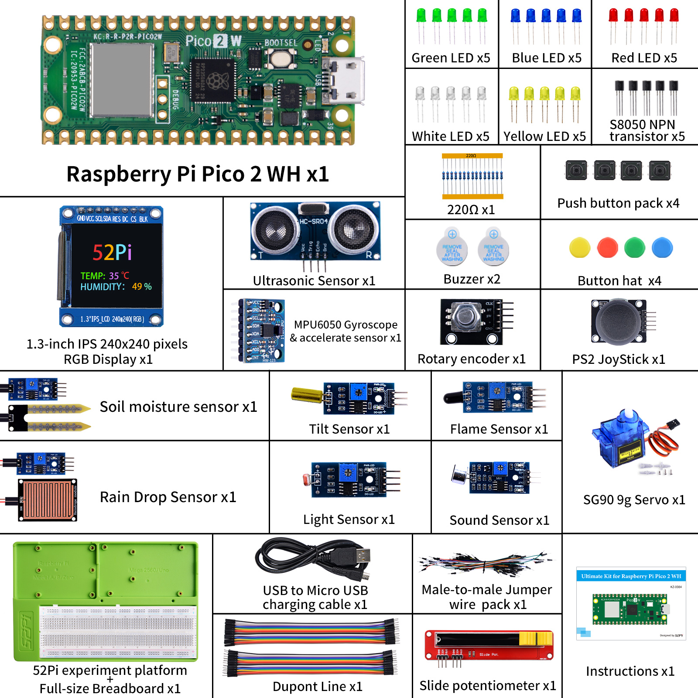
Features
- Comprehensive Learning Tool: Provides hands-on experience with different types of sensors and electronic components
- Easy to Use: Clear documentation and straightforward connections make it accessible for beginners
- Versatile Projects: Create a wide range of projects from simple LED blinking to complex environmental monitoring systems
- Educational Resource: Perfect for schools, makerspaces, and self-learners
- Well-organized Components: All parts are carefully selected and tested for compatibility with Raspberry Pi Pico 2W
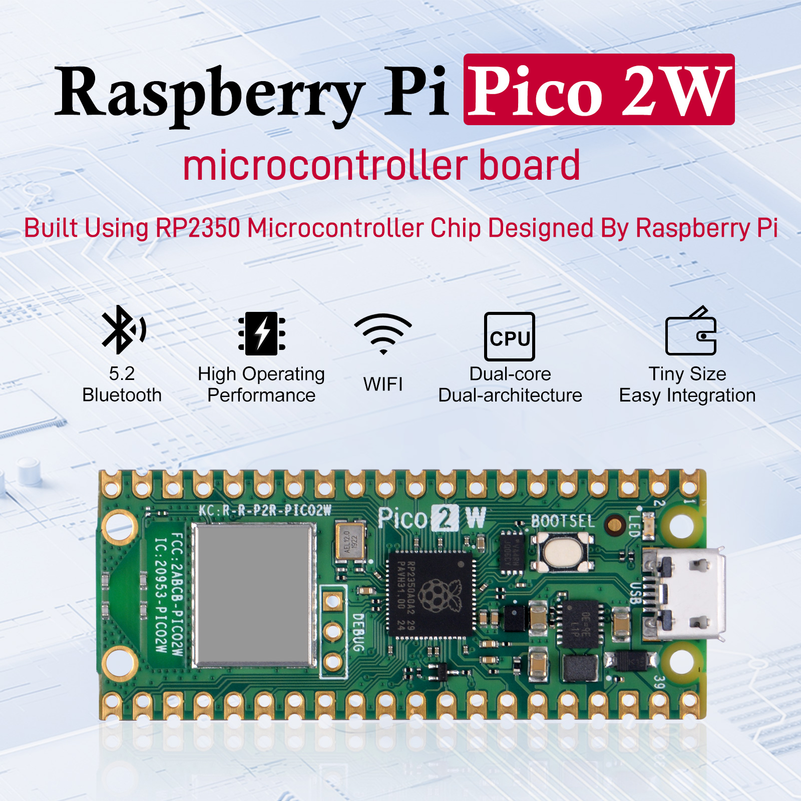
Getting Started
- Connect Components: Use the included DuPont wires to connect sensors to the breadboard and then to your Raspberry Pi Pico 2W
- Upload Code: Use Thonny or another MicroPython-compatible IDE to upload example code to your Pico
- Experiment and Learn: Modify the code and connections to explore different functionalities
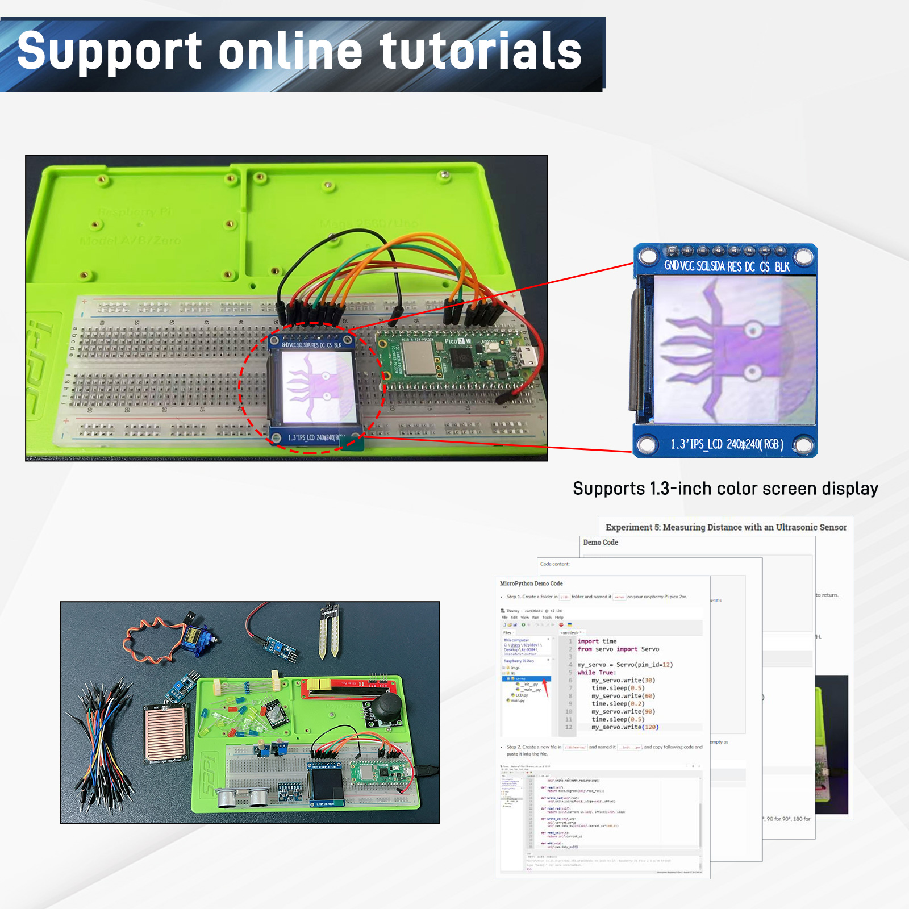
Who Should Use This Kit
- Beginners: Those new to electronics and programming who want to learn through hands-on experimentation
- Educators: Teachers looking for engaging STEM teaching tools
- Hobbyists: DIY enthusiasts interested in creating interactive projects
- Makers: Creators developing prototypes for innovative IoT devices
Additional Resources
For detailed tutorials, wiring diagrams, technical explanations, and MicroPython demo codes for each component, please visit our official documentation website: 52Pi Docs
Our website also offers video demonstrations to guide you through each experiment step-by-step.
Pinout
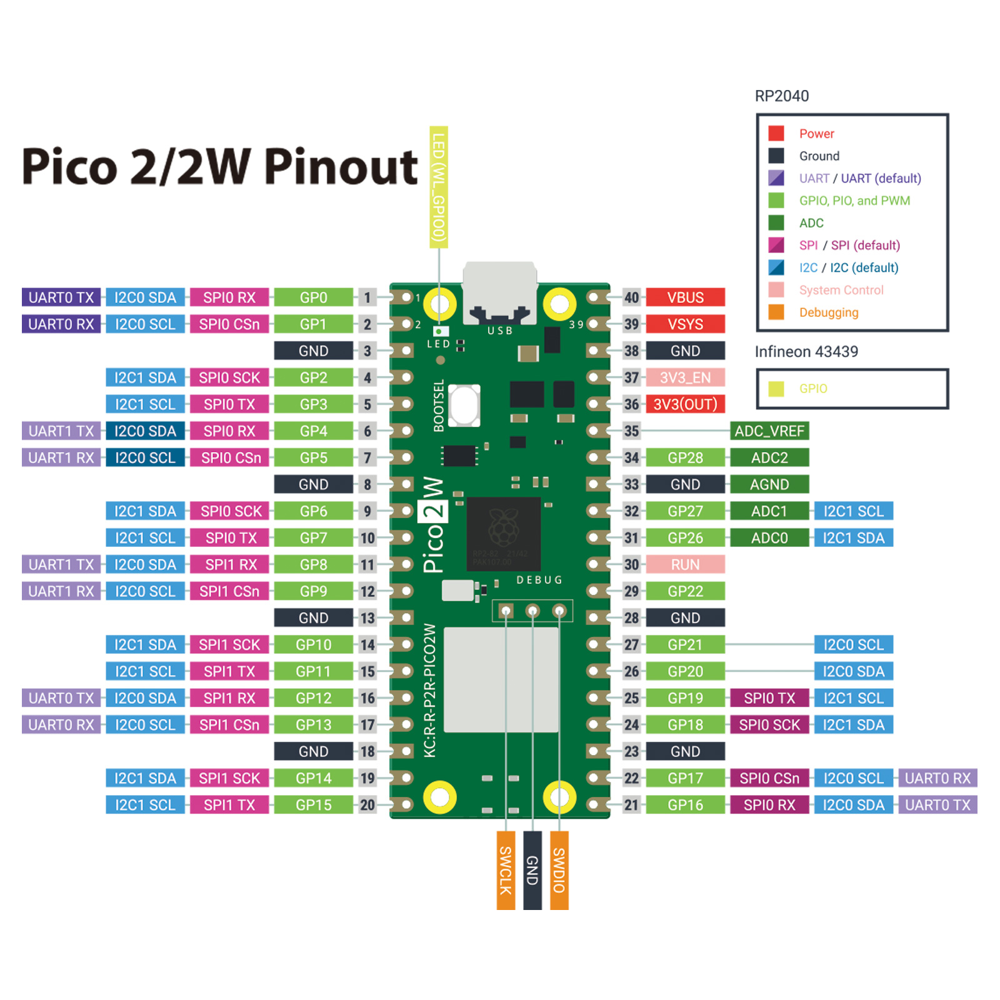
Getting Start
- Install Programming IDE
- Download the latest MicroPython Firmware
- Put Your Pico 2 WH into Bootloader Mode
- Flash the MicroPython Firmware
- Configure Thonny IDE to Work with Pico 2 WH
- Testing Your Setup
Demo Projects
- Experiment 1: Blinking a LED
- Experiment 2: Reading a Flame Sensor
- Experiment 3: Measuring Soil Moisture
- Experiment 4: Controlling a Servo Motor
- Experiment 5: Measuring Distance with an Ultrasonic Sensor
- Experiment 6: Detecting Light Intensity with a Light Sensor
- Experiment 7: Control the duration of led by using HW-233 slid pot
- Experiment 8: Detecting Sound with a Sound Sensor
- Experiment 9: Controlling a Buzzer
- Experiment 10: Using a Rotary Encoder
- Experiment 11: 1.3inch IPS_LCD display
- Experiment 12: 1.3inch IPS_LCD display imagebox
- Experiment 13: Using PS2 Joystick
- Experiment 14: MPU6050 Gyroscope and Accelerometer Module
- Experiment 15: Raindrop Module
Experiment 1: Blinking a LED
Application Scenario
Create a simple LED blinker to signal an event, such as a heartbeat monitor or a warning indicator.
Working Principle
The LED is connected to one of the GPIO pins of the Pico 2 WH. By toggling the pin's voltage between HIGH and LOW, the LED will turn on and off.
Circuit Wiring
- Connect the longer leg (anode) of the LED to GPIO pin 15.
- Connect the shorter leg (cathode) of the LED to a 220Ω resistor.
- Connect the other end of the resistor to the GND pin on the Pico 2 WH.
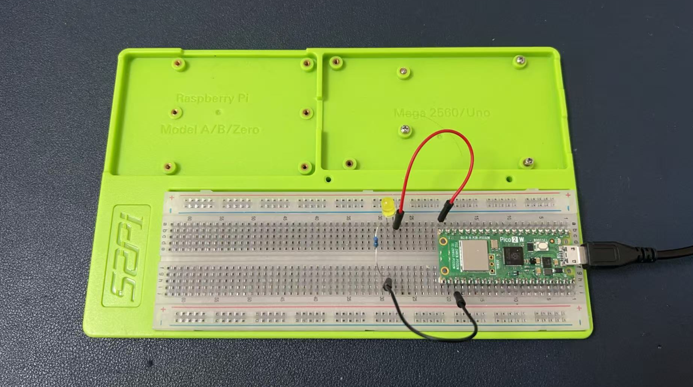
MicroPython Demo Code
from machine import Pin
import time
# Define the GPIO pin connected to the LED
led = Pin(15, Pin.OUT)
while True:
led.value(1) # Turn on the LED
time.sleep(1) # Wait for 1 second
led.value(0) # Turn off the LED
time.sleep(1) # Wait for 1 second
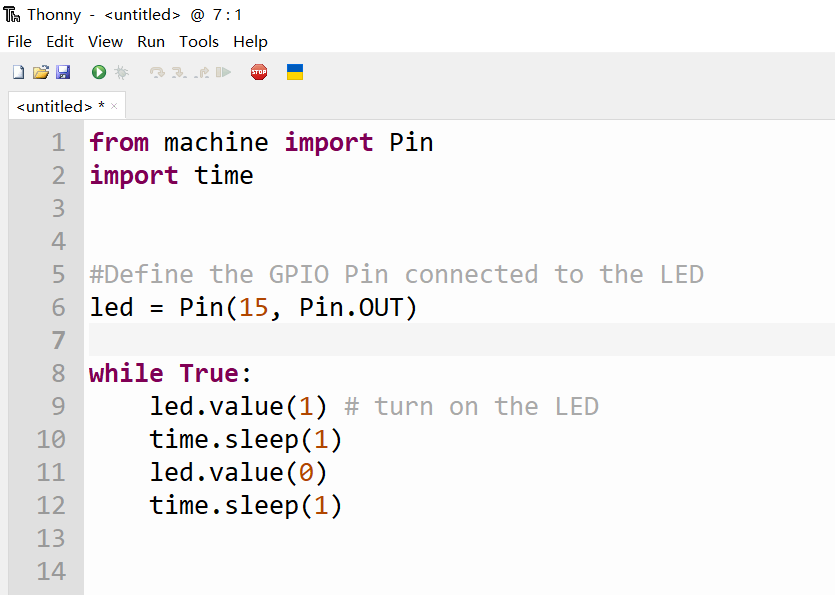
Code Explanation
- Pin(15, Pin.OUT): Initializes GPIO pin 15 as an output pin.
- led.value(1): Sets the pin to HIGH, turning on the LED.
- time.sleep(1): Pauses the program for 1 second.
- led.value(0): Sets the pin to LOW, turning off the LED.
Experiment 2: Reading a Flame Sensor
Application Scenario
Detect the presence of fire or flame in a room for a safety monitoring system.
Working Principle
The flame sensor detects infrared light emitted by flames and outputs a digital signal (HIGH or LOW) based on the presence of fire.
Circuit Wiring
- Connect the VCC pin of the flame sensor to the 3.3V pin on the Pico 2 WH.
- Connect the GND pin of the flame sensor to the GND pin on the Pico 2 WH.
- Connect the OUT pin of the flame sensor to GPIO pin 14 on the Pico 2 WH.
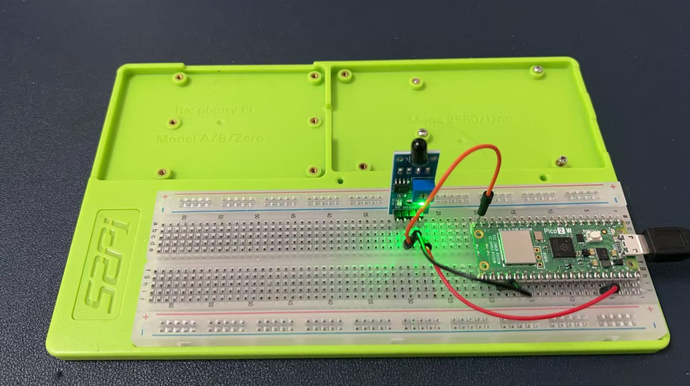
MicroPython Demo Code
from machine import Pin
import time
# Define the GPIO pin connected to the flame sensor
flame_sensor = Pin(14, Pin.IN)
while True:
if flame_sensor.value() == 1:
print("Flame detected!")
else:
print("No flame detected.")
time.sleep(0.5)
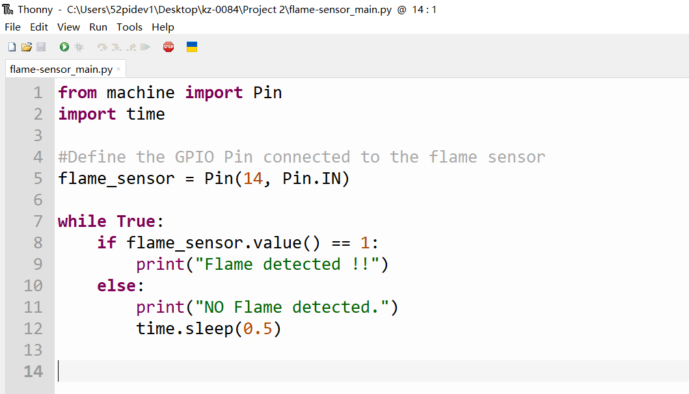
Code Explanation
- Pin(14, Pin.IN): Initializes GPIO pin 14 as an input pin.
- flame_sensor.value(): Reads the digital value from the flame sensor (1 for flame detected, 0 for no flame).
- print(): Outputs the result to the console.
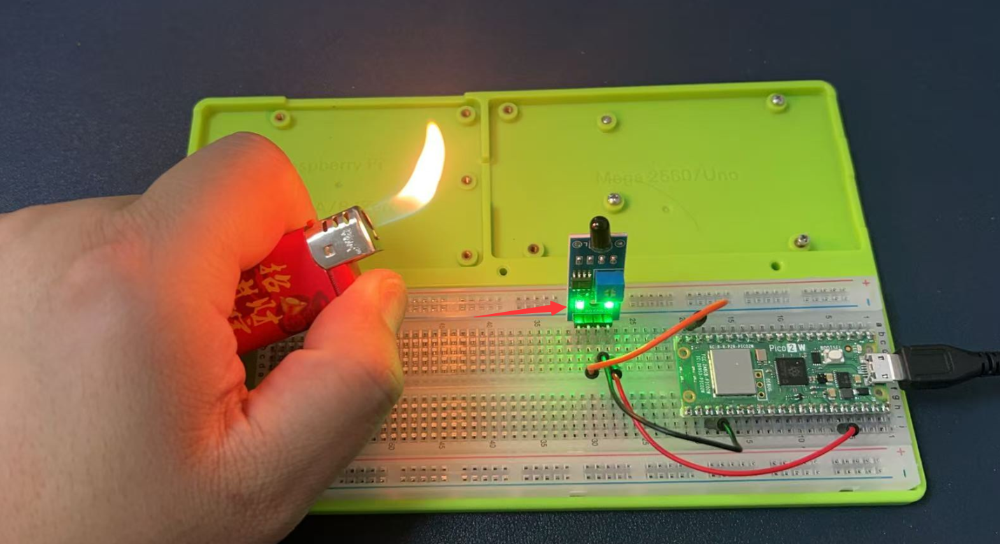
NOTE: Please note that when using a lighter, be sure to prevent fires. If minors are to use it, they must be accompanied by an adult.
The detection accuracy and trigger level of the sensor can be adjusted using screws. By using a screwdriver to adjust the potentiometer, turn it until the trigger LED turns off. At this point, the sensitivity has been properly adjusted. You just need to turn on the lighter, and the LED will light up.
Experiment 3: Measuring Soil Moisture
Application Scenario
Monitor the moisture level of a plant's soil to automate watering.
Working Principle
The soil moisture sensor measures the conductivity of the soil. Higher conductivity indicates more moisture.
Circuit Wiring
- Connect the VCC pin of the soil moisture sensor to the 3.3V pin on the Pico 2 WH.
- Connect the GND pin of the sensor to the GND pin on the Pico 2 WH.
- Connect the OUT pin of the sensor to GPIO pin 13 on the Pico 2 WH.
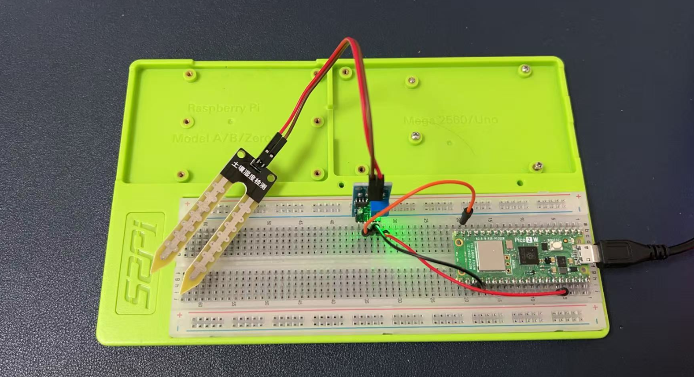
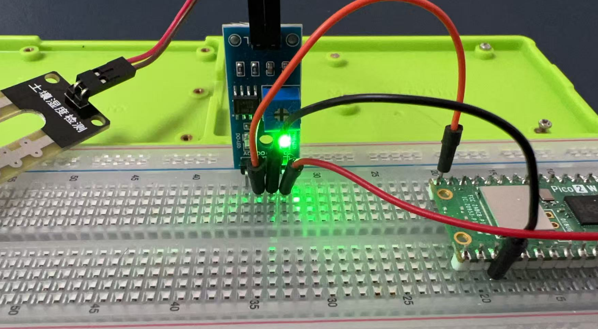
MicroPython Demo Code
from machine import Pin
import time
# Define the GPIO pin connected to the soil moisture sensor
soil_sensor = Pin(13, Pin.IN)
while True:
if soil_sensor.value() == 1:
print("Soil is dry.")
else:
print("Soil is moist.")
time.sleep(1)
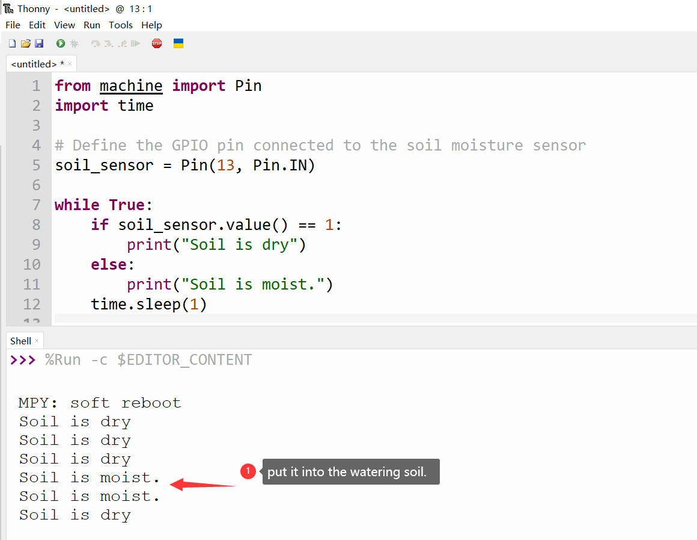
Code Explanation
- Pin(13, Pin.IN): Initializes GPIO pin 13 as an input pin.
- soil_sensor.value(): Reads the digital value from the soil moisture sensor (1 for dry soil, 0 for moist soil).
- print(): Outputs the moisture status to the console.
Test it with wet paper:
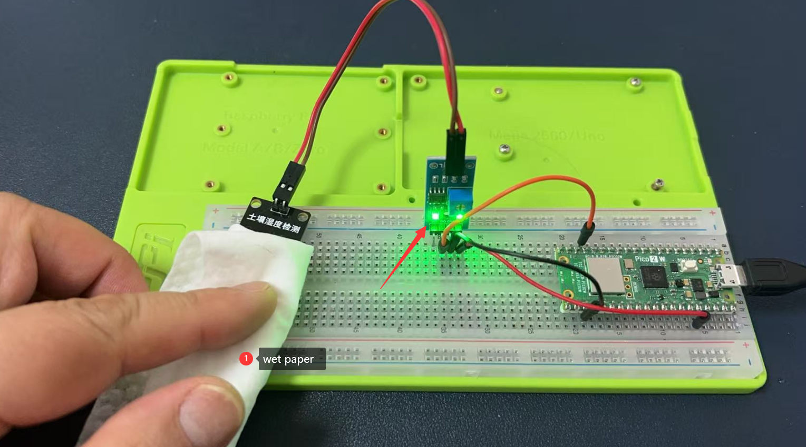
Monit the shell outputs:
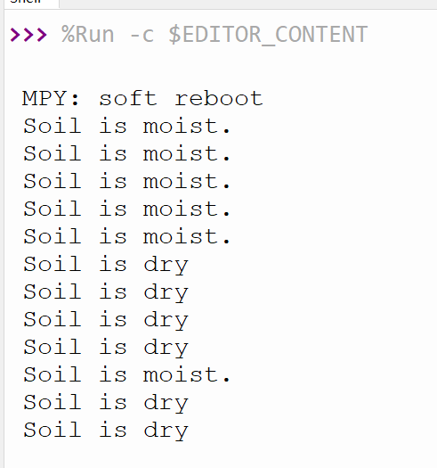
Experiment 4: Controlling a Servo Motor
Application Scenario
Control a robotic arm or a small mechanical device using the servo motor.
Working Principle
The servo motor is controlled by a PWM (Pulse Width Modulation) signal. The position of the servo is determined by the duration of the pulse.
Circuit Wiring
- Connect the VCC pin of the servo to the 5V(VBUS) pin on the Pico 2 WH.
- Connect the GND pin of the servo to the GND pin on the Pico 2 WH.
- Connect the signal pin of the servo to GPIO pin 12 on the Pico 2 WH.
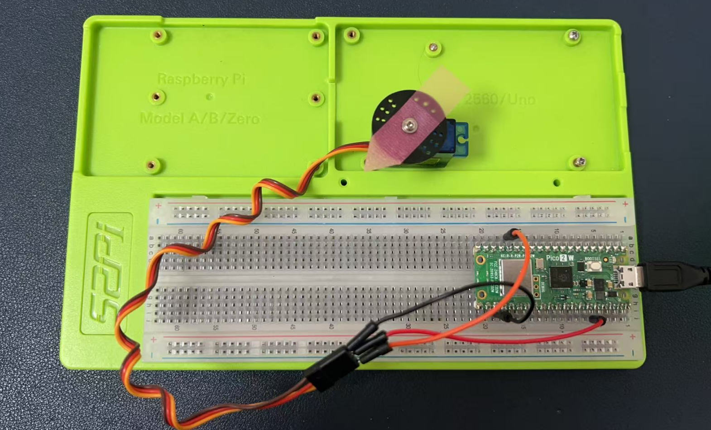
MicroPython Demo Code
- Step 1. Create a folder in
/libfolder and named itservoon your raspberry Pi pico 2w.
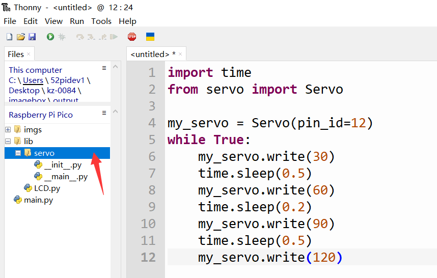
- Step 2. Create a new file in
/lib/servo/and named it__init__.py, and copy following code and paste it into the file.
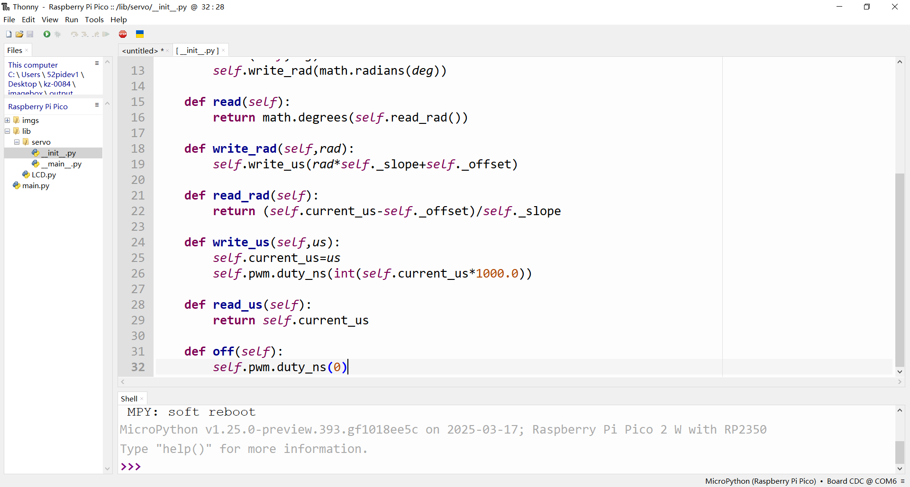
Code content:
import machine
import math
class Servo:
def __init__(self,pin_id,min_us=544.0,max_us=2400.0,min_deg=0.0,max_deg=180.0,freq=50):
self.pwm = machine.PWM(machine.Pin(pin_id))
self.pwm.freq(freq)
self.current_us = 0.0
self._slope = (min_us-max_us)/(math.radians(min_deg)-math.radians(max_deg))
self._offset = min_us
def write(self,deg):
self.write_rad(math.radians(deg))
def read(self):
return math.degrees(self.read_rad())
def write_rad(self,rad):
self.write_us(rad*self._slope+self._offset)
def read_rad(self):
return (self.current_us-self._offset)/self._slope
def write_us(self,us):
self.current_us=us
self.pwm.duty_ns(int(self.current_us*1000.0))
def read_us(self):
return self.current_us
def off(self):
self.pwm.duty_ns(0)
- Step 3. Create a new file in
/lib/servo/and named it__main__.pyand keep it empty as following figure:
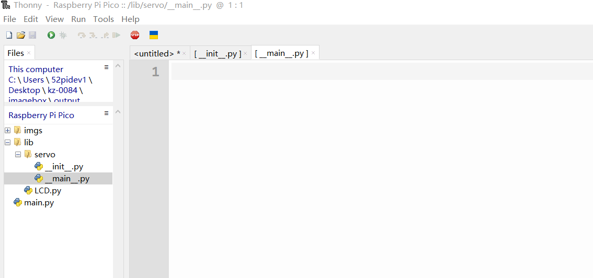
Demo Code
import time
from servo import Servo
my_servo = Servo(pin_id=12)
while True:
my_servo.write(30)
time.sleep(2)
my_servo.write(60)
time.sleep(2)
my_servo.write(30)
time.sleep(2)
my_servo.write(180)
time.sleep(2)
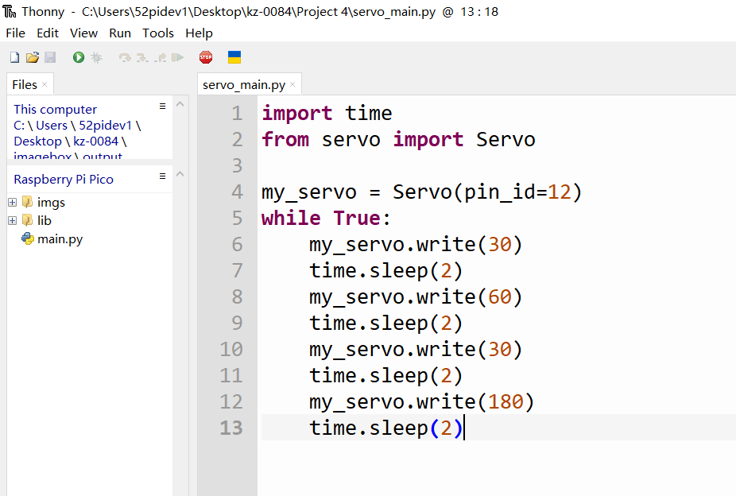
Code Explanation
- Servo(Pin_id=12): Initializes GPIO pin 12 as a Servo.
- my_servo.write(30): Sets the angle to control the servo position (30 for 30°, 90 for 90°, 180 for 180°).
- time.sleep(2): Pauses the program for 2 second.
Experiment 5: Measuring Distance with an Ultrasonic Sensor
Application Scenario
Measure the distance to an object for applications like obstacle detection in robotics.
Working Principle
The ultrasonic sensor emits a sound wave and measures the time it takes for the echo to return. The distance is calculated using the speed of sound.
Circuit Wiring
- Connect the VCC pin of the ultrasonic sensor to the 5V(VBUS) pin on the Pico 2 WH.
- Connect the GND pin of the sensor to the GND pin on the Pico 2 WH.
- Connect the TRIG pin of the sensor to GPIO pin 11 on the Pico 2 WH.
- Connect the ECHO pin of the sensor to GPIO pin 10 on the Pico 2 WH.
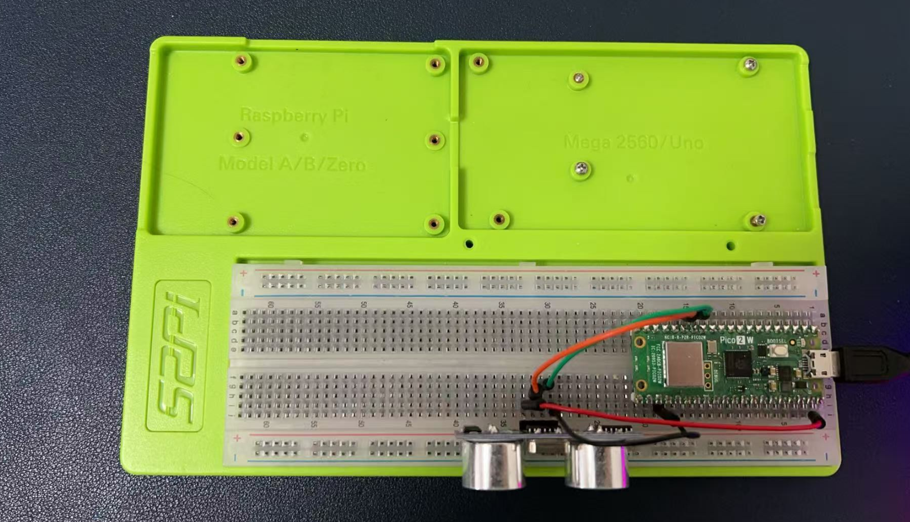
MicroPython Demo Code
from machine import Pin, time_pulse_us
import time
# Define GPIO pins connected to the ultrasonic sensor
trig = Pin(11, Pin.OUT)
echo = Pin(10, Pin.IN)
while True:
trig.value(0)
time.sleep_us(2)
trig.value(1)
time.sleep_us(10)
trig.value(0)
pulse_time = time_pulse_us(echo, 1)
distance = pulse_time * 0.034 / 2 # Speed of sound = 340 m/s
print(f"Distance: {distance:.2f} cm")
time.sleep(1)
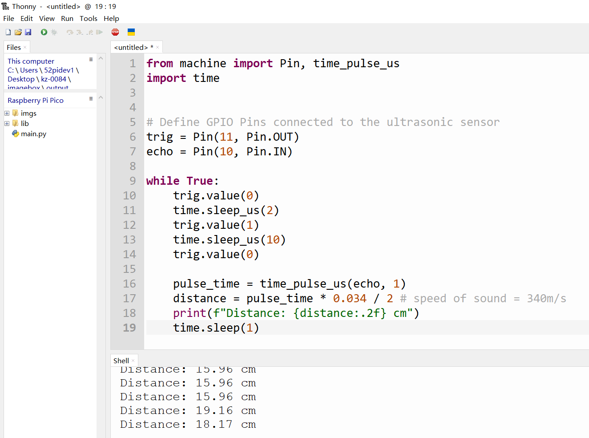
Code Explanation
- trig.value(1): Sends a short pulse to the TRIG pin to start the measurement.
- time_pulse_us(echo, 1): Measures the duration of the ECHO pulse in microseconds.
- distance = pulse_time * 0.034 / 2: Calculates the distance in centimeters.
- print(): Outputs the distance to the console.
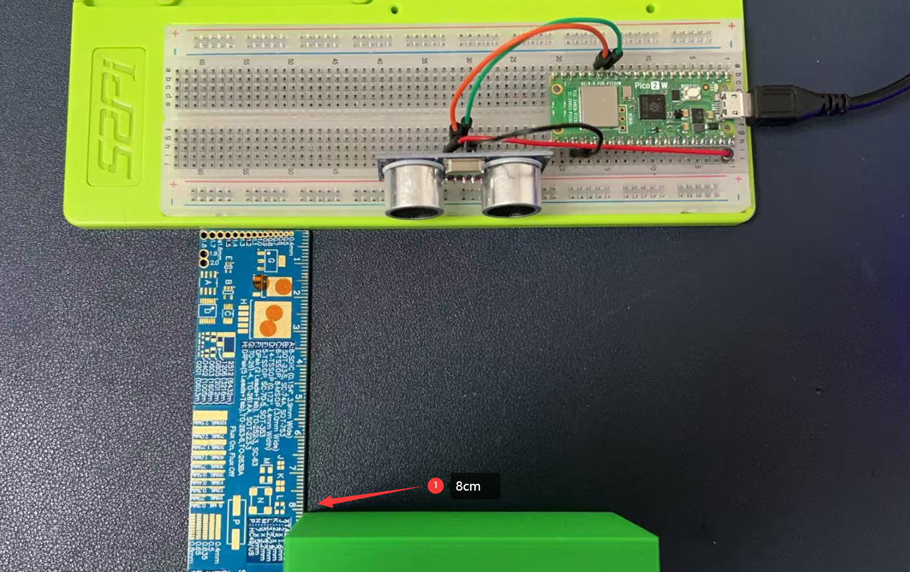
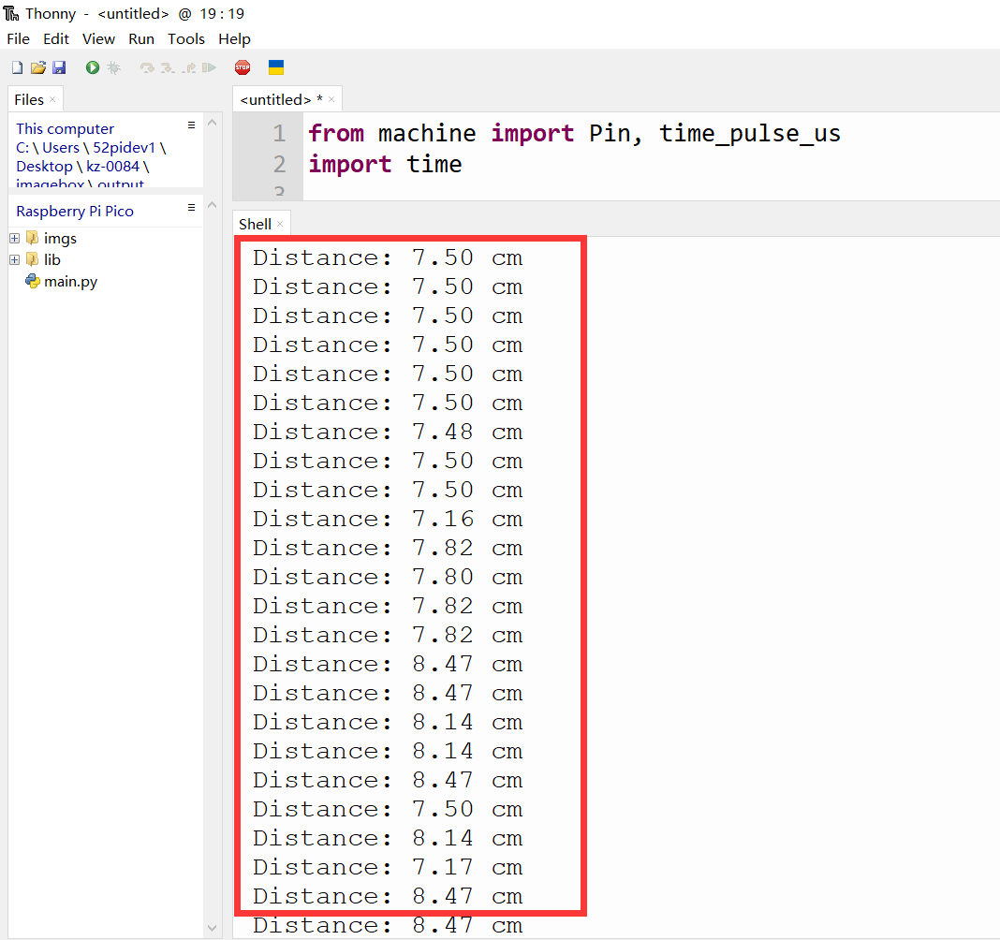
Experiment 6: Detecting Light Intensity with a Light Sensor
Application Scenario
Create an automatic lighting system that turns on when the ambient light is too low.
Working Principle
The light sensor detects the intensity of ambient light and outputs a digital level 0 or 1.
Circuit Wiring
- Connect the VCC pin of the light sensor to the 3.3V pin on the Pico 2 WH.
- Connect the GND pin of the sensor to the GND pin on the Pico 2 WH.
- Connect the OUT pin of the sensor to GPIO pin 16 on the Pico 2 WH.
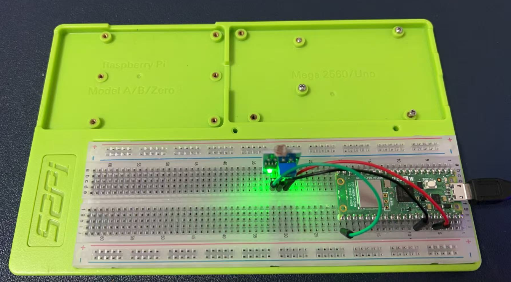
MicroPython Demo Code
from machine import Pin
import time
# Define the pin connected to the light sensor
light_sensor = Pin(16, Pin.IN)
while True:
if light_sensor.value() == 1:
print("No light detect...")
else:
print("Light detected...")
time.sleep(1)
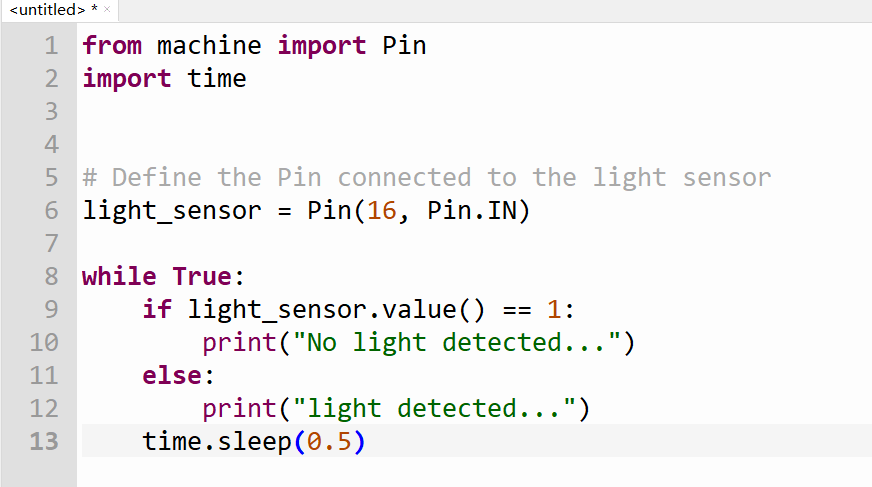
Code Explanation
Pin(16, Pin.OUT): Initializes GPIO pin 16 as an digital input.1: Light detected,0: no light detected.print(): Outputs the light level to the console.
when you cover the light sensor, the output will change, think about which scenario can use this module?
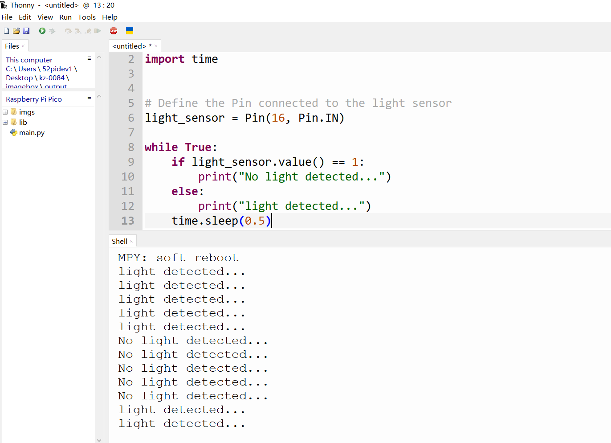
Experiment 7: Control the duration of led by using HW-233 slid pot
Application Scenario
Control the interval time of led by using slid pot HW-233, read analog data from slid pot and then map the data to 0 to 60 seconds for the LED blink duration.
Working Principle
This experiment aims to control the blinking interval of an LED using the HW-233 slide potentiometer. The working principle of the experiment is as follows:
-
Potentiometer Reading: The HW-233 slide potentiometer is an analog input device whose output voltage is proportional to the position of the slider. As the slider moves along the potentiometer, it changes the resistance between the two ends, thus altering the output voltage.
-
Analog Signal Conversion: In the experiment, a microcontroller (such as an Arduino) will read the analog output of the potentiometer. This analog signal needs to be converted into a digital signal so that the microcontroller can process it. This is typically done through an Analog-to-Digital Converter (ADC).
-
Data Mapping: The analog data read will be mapped to a specific time range, i.e., 0.1 to 1 seconds. The mapping process involves converting the value of the analog signal into the corresponding time interval. This can be achieved by writing a specific algorithm or using a lookup table.
-
LED Control: Once the analog data is mapped to the time interval, the microcontroller will use this time interval to control the blinking of the LED. Specifically, the microcontroller will set a timer, and when the timer reaches the set time interval, it will toggle the state of the LED (from on to off or from off to on).
-
Feedback Loop: This process is cyclical, with the microcontroller continuously reading the value of the potentiometer and updating the LED's blinking interval based on the new value. In this way, users can adjust the blinking speed of the LED in real-time by moving the slider of the potentiometer.
Through this method, the experiment demonstrates how to use a simple analog input device to control the behavior of a digital output device, which is a fundamental concept in electronics and embedded system design.
Circuit Wiring
Components Required:
- Raspberry Pi Pico
- LED Light
- 220-ohm Resistor
- Slide Potentiometer (with terminals labeled OTA, OTB, VCC, and GND)
Wiring Instructions:
- LED Connection:
- Connect the longer leg (anode) of the LED to one of the GPIO pins on the Raspberry Pi Pico (e.g., GPIO 15).
- Connect the shorter leg (cathode) of the LED to one end of the 220-ohm resistor.
-
Connect the other end of the 220-ohm resistor to a GND pin on the Raspberry Pi Pico.
-
Slide Potentiometer Connection:
- Connect the VCC terminal of the slide potentiometer to a 3.3V pin on the Raspberry Pi Pico.
- Connect the GND terminal of the slide potentiometer to a GND pin on the Raspberry Pi Pico.
- Connect the OTA terminal of the slide potentiometer to an analog input pin on the Raspberry Pi Pico (e.g., GPIO 26).This pin will be used to read the analog value from the potentiometer.
- The OTB terminal of the slide potentiometer is typically not used in this setup and can be left unconnected.
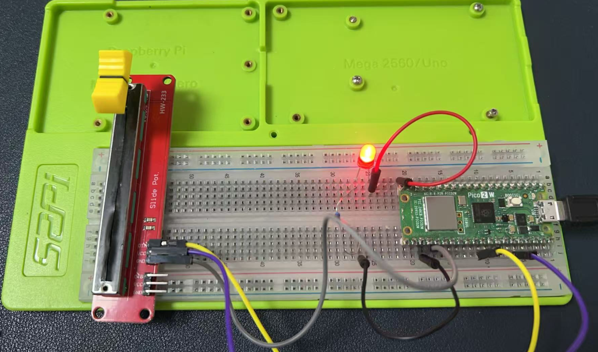
Details:
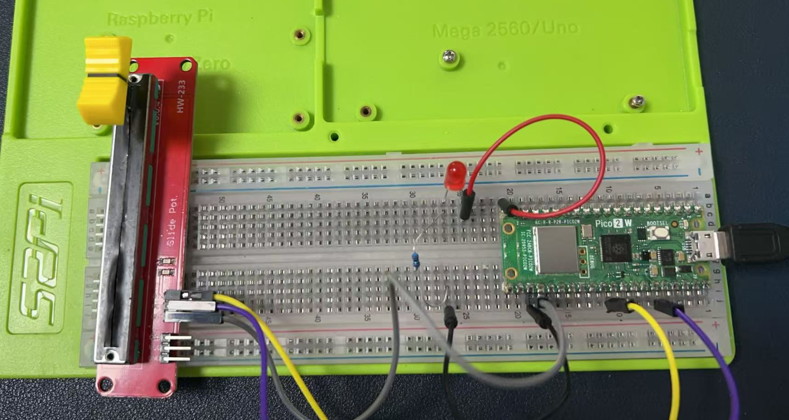
Circuit Overview:
- The LED is connected in series with a resistor to limit the current flowing through it, protecting it from burning out.
- The slide potentiometer is used to vary the resistance, which in turn varies the voltage at the OTA terminal. This analog voltage is read by the Raspberry Pi Pico to determine the LED's blinking interval.
Final Setup:
- Once all components are connected and the program is uploaded to the Raspberry Pi Pico, you should be able to adjust the blinking interval of the LED by moving the slider on the potentiometer.
This setup allows you to control the LED's blinking duration dynamically using the slide potentiometer, demonstrating a practical application of analog input in a microcontroller-based project.
MicroPython Demo Code
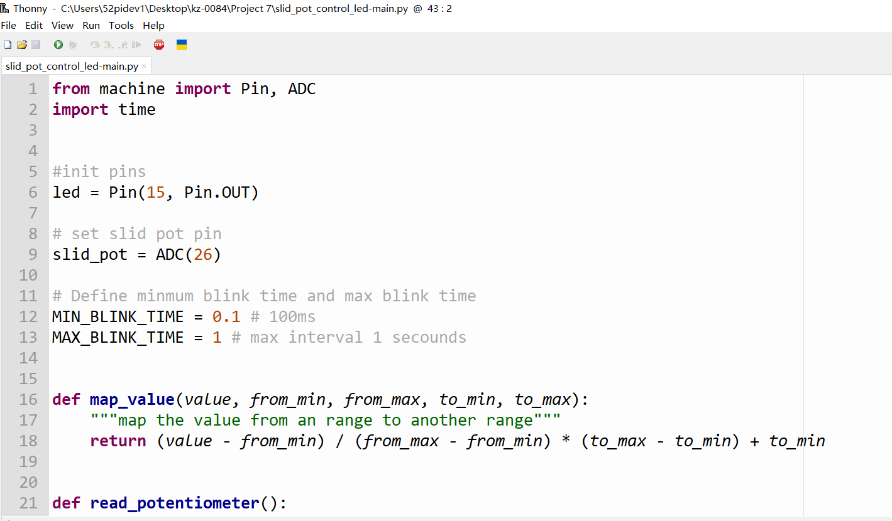
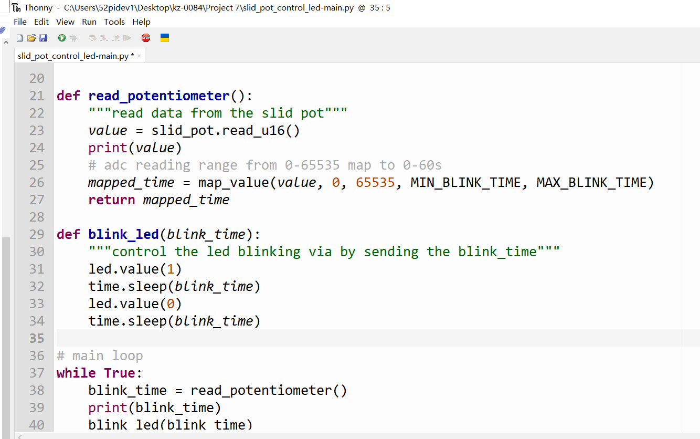
Demo code
from machine import Pin, ADC
import time
#init pins
led = Pin(15, Pin.OUT)
# set slid pot pin
slid_pot = ADC(26)
# Define minmum blink time and max blink time
MIN_BLINK_TIME = 0.1 # 100ms
MAX_BLINK_TIME = 1 # max interval 1 secounds
def map_value(value, from_min, from_max, to_min, to_max):
"""map the value from an range to another range"""
return (value - from_min) / (from_max - from_min) * (to_max - to_min) + to_min
def read_potentiometer():
"""read data from the slid pot"""
value = slid_pot.read_u16()
print(value)
# adc reading range from 0-65535 map to 0-60s
mapped_time = map_value(value, 0, 65535, MIN_BLINK_TIME, MAX_BLINK_TIME)
return mapped_time
def blink_led(blink_time):
"""control the led blinking via by sending the blink_time"""
led.value(1)
time.sleep(blink_time)
led.value(0)
time.sleep(blink_time)
# main loop
while True:
blink_time = read_potentiometer()
print(blink_time)
blink_led(blink_time)
Code Explanation
ADC(26): Initializes GPIO pin 26 as an ADC input.adc.read_u16(): Reads the raw 16-bit ADC value.map_value: Mapping the reading data of slid pot from range 0-65535 to 0.1 to 1 secondsprint(): Outputs the temperature to the console.
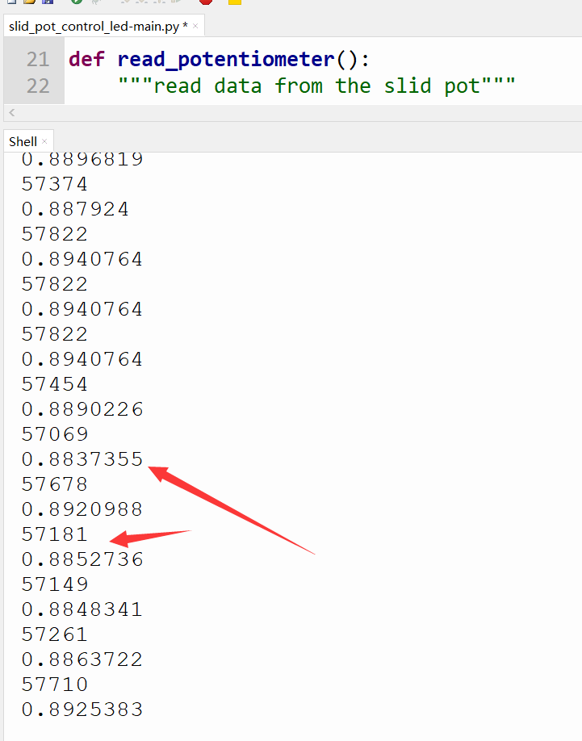
Demo video
Experiment 8: Detecting Sound with a Sound Sensor
Application Scenario
Create a noise detector to trigger an alarm when a loud sound is detected.
Working Principle
The sound sensor detects sound pressure levels and outputs a digital signal when the sound exceeds a certain threshold.
Circuit Wiring
- Connect the VCC pin of the sound sensor to the 3.3V pin on the Pico 2 WH.
- Connect the GND pin of the sensor to the GND pin on the Pico 2 WH.
- Connect the OUT pin of the sensor to GPIO pin 1 on the Pico 2 WH.
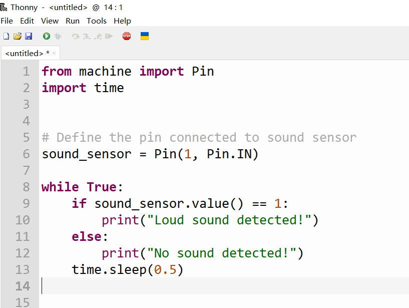
MicroPython Demo Code
from machine import Pin
import time
# Define the GPIO pin connected to the sound sensor
sound_sensor = Pin(1, Pin.IN)
while True:
if sound_sensor.value() == 1:
print("Loud sound detected!")
else:
print("No sound detected.")
time.sleep(0.5)
Code Explanation
Pin(16, Pin.IN): Initializes GPIO pin 16 as an input pin.sound_sensor.value(): Reads the digital value from the sound sensor (1 for loud sound, 0 for no sound).print(): Outputs the sound detection status to the console.
Experiment 9: Controlling a Buzzer
Application Scenario
Create an alarm system that buzzes when a specific condition is met (e.g., motion detected).
Working Principle
The buzzer generates sound by vibrating a diaphragm. It can be controlled by toggling the GPIO pin's voltage.
Circuit Wiring
- Connect the positive pin of the buzzer to GPIO pin VBUS (5V) on the Pico 2 WH.
- Connect the negative pin of the buzzer to the 17 pin on the Pico 2 WH.
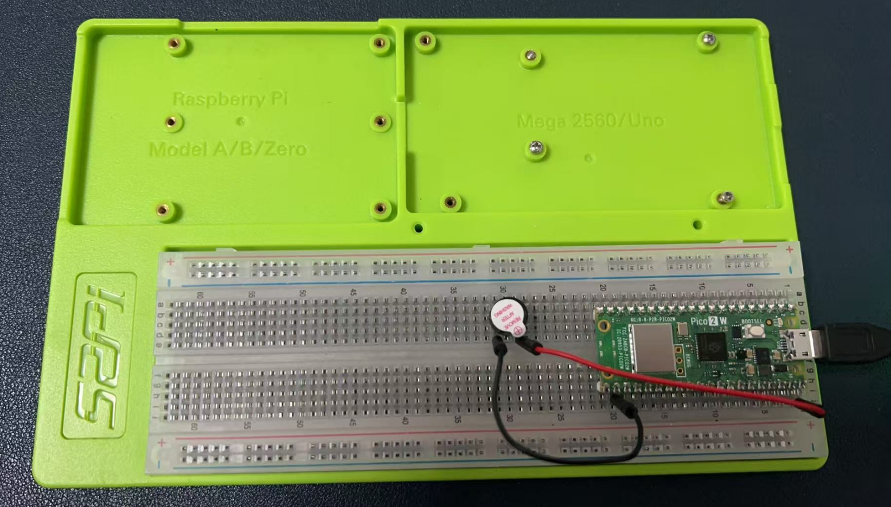
MicroPython Demo Code
from machine import Pin
import time
# Define the GPIO pin connected to the buzzer
buzzer = Pin(17, Pin.OUT)
while True:
buzzer.value(1) # Turn on the buzzer
time.sleep(0.5) # Buzz for 0.5 seconds
buzzer.value(0) # Turn off the buzzer
time.sleep(1) # Wait for 1 second
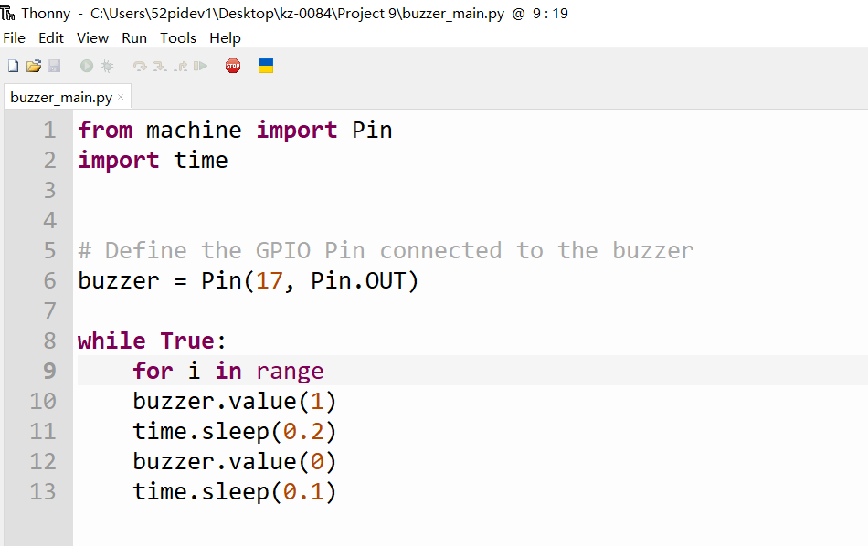
Code Explanation
Pin(17, Pin.OUT): Initializes GPIO pin 17 as an output pin.buzzer.value(1): Sets the pin to HIGH, turning on the buzzer.time.sleep(0.5): Pauses the program for 0.5 seconds.buzzer.value(0): Sets the pin to LOW, turning off the buzzer.
Experiment 10: Using a Rotary Encoder
Application Scenario
Create a volume control or menu navigation system using the rotary encoder.
Working Principle
The rotary encoder converts mechanical rotation into digital pulses. It outputs two signals (A and B) that can be used to determine rotation direction and speed.
Circuit Wiring
- Connect the VCC(+) pin of the rotary encoder to the 5V(VBUS) pin on the Pico 2 WH.
- Connect the GND pin of the encoder to the GND pin on the Pico 2 WH.
- Connect the CLK pin to GPIO pin 14.
- Connect the DT pin to GPIO pin 13.
- Connect the SW pin to GPIO pin 12.
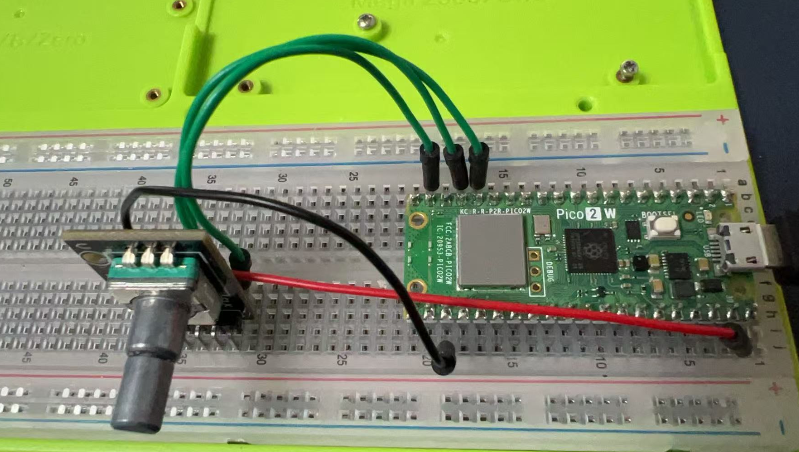
MicroPython Demo Code
from machine import Pin
import time
# init pins
clk = Pin(14, Pin.IN, Pin.PULL_UP) # CLK pin
dt = Pin(13, Pin.IN, Pin.PULL_UP) # DT pin
sw = Pin(12, Pin.IN, Pin.PULL_UP) # button pin
# init variables
encoder_pos = 0
last_clk_state = clk.value()
# handle encoder
def handle_encoder(pin):
global encoder_pos, last_clk_state
current_clk_state = clk.value()
if current_clk_state != last_clk_state:
if dt.value() != current_clk_state:
encoder_pos += 1
else:
encoder_pos -= 1
last_clk_state = current_clk_state
# register interrupt
clk.irq(trigger=Pin.IRQ_RISING | Pin.IRQ_FALLING, handler=handle_encoder)
# main loop.
while True:
print("Encoder Position:", encoder_pos)
time.sleep(0.1)
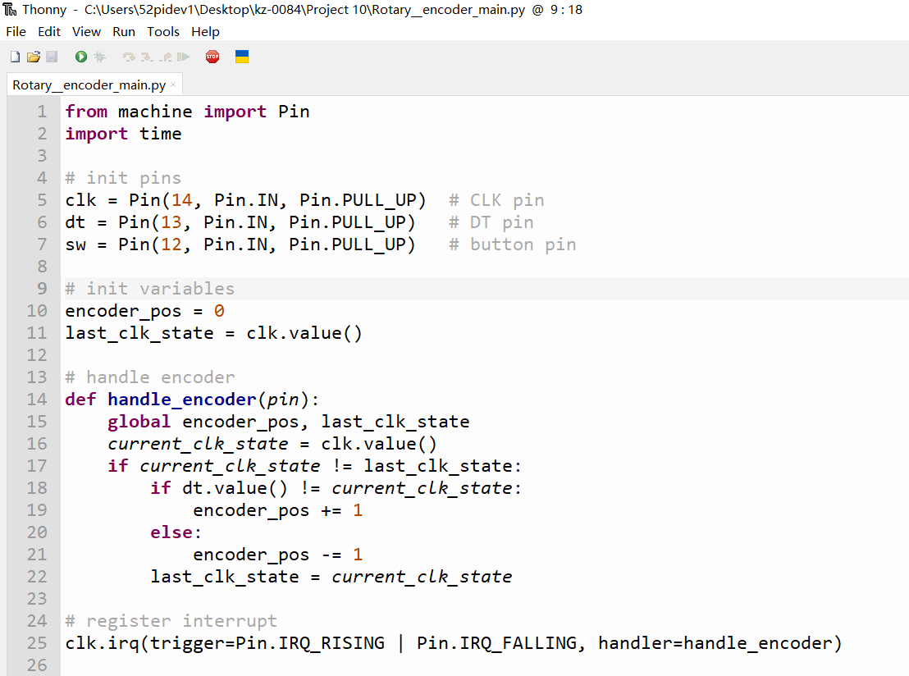
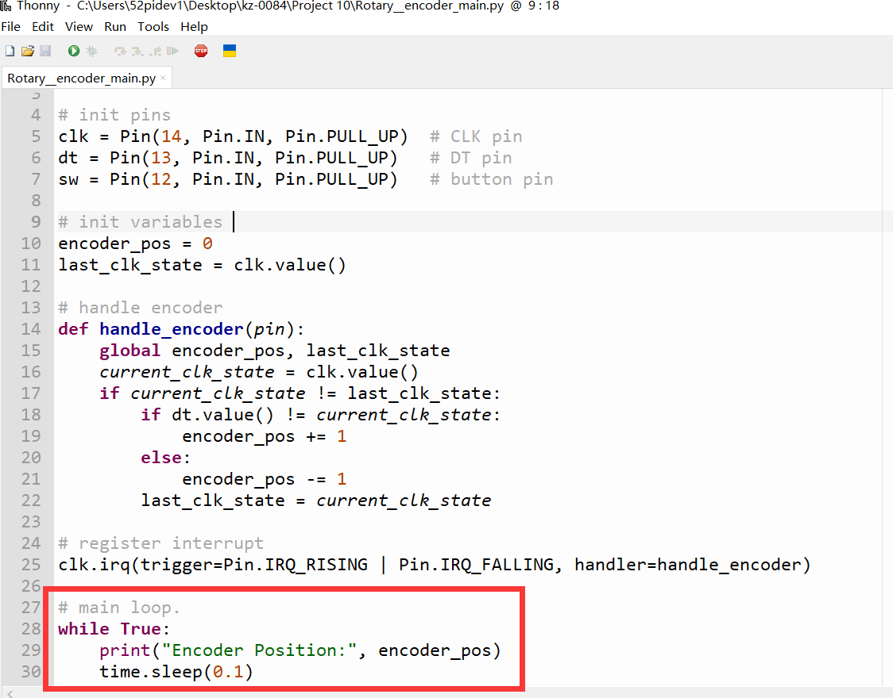
Code Explanation
-from machine import Pin: Import the Pin class from the machine module. This allows us to interact with the GPIO pins on the Raspberry Pi Pico.
- import time: Import the time module, which provides functions for working with time-related operations, such as delays.
# init pins
clk = Pin(14, Pin.IN, Pin.PULL_UP) # CLK pin
dt = Pin(13, Pin.IN, Pin.PULL_UP) # DT pin
sw = Pin(12, Pin.IN, Pin.PULL_UP) # button pin
clk = Pin(14, Pin.IN, Pin.PULL_UP): Initialize the CLK pin connected to GPIO 14 as an input pin with an internal pull-up resistor. This pin will be used to detect the clock signal from the rotary encoder.
- dt = Pin(13, Pin.IN, Pin.PULL_UP): Initialize the DT pin connected to GPIO 13 as an input pin with an internal pull-up resistor. This pin will be used to detect the direction signal from the rotary encoder.
- sw = Pin(12, Pin.IN, Pin.PULL_UP): Initialize the button pin connected to GPIO 12 as an input pin with an internal pull-up resistor. This pin is used to detect button presses (if the rotary encoder has a built-in button).
- encoder_pos = 0: Initialize the encoder_pos variable to store the current position of the rotary encoder. It starts at 0.
- last_clk_state = clk.value(): Read the initial state of the CLK pin and store it in last_clk_state. This will be used to detect changes in the CLK signal.
# handle encoder
def handle_encoder(pin):
global encoder_pos, last_clk_state
current_clk_state = clk.value()
if current_clk_state != last_clk_state:
if dt.value() != current_clk_state:
encoder_pos += 1
else:
encoder_pos -= 1
last_clk_state = current_clk_state
def handle_encoder(pin): Define a function called handle_encoder that will be called whenever an interrupt occurs on the CLK pin.
- global encoder_pos, last_clk_state: Declare that we are using the global variables encoder_pos and last_clk_state inside this function.
- current_clk_state = clk.value(): Read the current state of the CLK pin.
- if current_clk_state != last_clk_state: Check if the state of the CLK pin has changed since the last time it was read.
- if dt.value() != current_clk_state: Compare the state of the DT pin with the current state of the CLK pin.
- If they are different, it means the encoder is rotating in one direction, so increment encoder_pos by 1.
- If they are the same, it means the encoder is rotating in the opposite direction, so decrement encoder_pos by 1.
- last_clk_state = current_clk_state: Update last_clk_state to the current state of the CLK pin to prepare for the next change detection.
- clk.irq(trigger=Pin.IRQ_RISING | Pin.IRQ_FALLING, handler=handle_encoder): Register an interrupt on the CLK pin. This means that whenever the CLK pin changes state (either rising or falling edge), the handle_encoder function will be called.
- while True: Start an infinite loop that will run continuously.
- print("Encoder Position:", encoder_pos): Print the current position of the rotary encoder to the console.
- time.sleep(0.1): Pause for 0.1 seconds before printing the encoder position again. This creates a small delay to avoid flooding the console with too many updates.
Summary
This code sets up a rotary encoder connected to the Raspberry Pi Pico. It uses GPIO pins to read the encoder's clock (CLK) and direction (DT) signals. The handle_encoder function is called whenever the CLK signal changes, and it updates the encoder_pos variable based on the direction of rotation. The main loop continuously prints the current position of the encoder to the console.
Result:
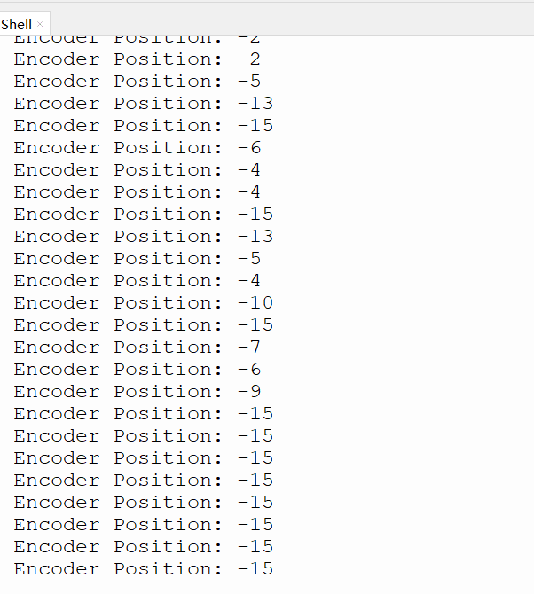
Experiment 11: 1.3inch IPS_LCD display
Application Scenario
The project aims to remotely send images from a computer to a Raspberry Pi Pico 2W microcontroller, which is connected to a network and equipped with a 1.3-inch IPS LCD screen. The goal is to display these images on the small screen using a Python script.
Components Involved
- Raspberry Pi Pico 2W: A microcontroller board with Wi-Fi capabilities.
- 1.3-inch IPS LCD Screen: A small display screen connected to the Pico 2W.
- Python Script: A program running on a computer that sends images over the network.
- MicroPython Firmware: The software running on the Raspberry Pi Pico 2W to handle network communication and display images.
Work Principle
3.1 Image Preparation
- Images are stored in a directory on a computer.
- These images are encoded in a format suitable for transmission over a network (e.g., JPEG, PNG).
3.2 Network Communication
- Computer Side:
- The Python script running on the computer establishes a network connection to the Raspberry Pi Pico 2W.
- The script reads the images from the directory and converts them into a binary format suitable for transmission.
-
The script sends the image data over the network to the Pico 2W.
-
Raspberry Pi Pico 2W Side:
- The Pico 2W is connected to the same network as the computer.
- It runs a MicroPython script that listens for incoming connections.
- When it receives image data, it decodes the binary data and prepares it for display on the LCD screen.
3.3 Display on the LCD Screen
- The Pico 2W uses its GPIO pins to interface with the 1.3-inch IPS LCD screen.
- The MicroPython script on the Pico 2W converts the received image data into a format that the LCD screen can display.
- The image is then rendered on the LCD screen.
4. Challenges and Limitations
- MicroPython Firmware Version: The official MicroPython firmware may have limitations in handling network communication or large image data.
- CYW43 Wi-Fi Driver: The official CYW43 Wi-Fi driver for the Raspberry Pi Pico may have bugs or compatibility issues, especially with certain Wi-Fi networks.
- 2.4GHz Network Support: The Wi-Fi module on the Pico 2W only supports 2.4GHz networks, which may be less reliable or have connectivity issues compared to 5GHz networks.
- Retry Mechanism: Due to these limitations, the project may require multiple attempts to successfully send and display images.
5. Detailed Steps
5.1 Computer Script
- Establish Network Connection:
- The script connects to the Pico 2W using a TCP/IP connection.
-
It may use a predefined IP address or discover the Pico 2W on the network.
-
Read and Encode Images:
- The script reads images from a specified directory.
-
Each image is encoded into a binary format (e.g., using libraries like
Pillowin Python). -
Send Image Data:
- The binary data is sent over the network to the Pico 2W.
- The script may include headers or metadata to indicate the size and format of the image data.
5.2 Pico 2W Script
- Listen for Connections:
- The Pico 2W runs a MicroPython script that sets up a TCP/IP server.
-
It listens for incoming connections from the computer.
-
Receive and Decode Image Data:
- When data is received, the Pico 2W decodes the binary data.
-
It may use libraries like
ustructto handle the binary data. -
Render Image on LCD:
- The decoded image data is converted into a format suitable for the LCD screen.
- The Pico 2W uses its GPIO pins to control the LCD screen and display the image.
6. Conclusion
This project demonstrates the possibility of sending images over a network to a microcontroller and displaying them on a small LCD screen. Despite potential challenges due to firmware and hardware limitations, it provides a practical example of remote image transmission and display using Wi-Fi and MicroPython.
Circuit Wiring
| Raspberry Pi Pico 2WH | 1.3Inch IPS_LCD 240x240 RGB display module |
|---|---|
| GP2 | SCL(SCK) |
| GP3 | SDA(MOSI) |
| GP4 | DC |
| GP5 | CS |
| GP6 | RST |
| GP7 | BLK |
MicroPython Demo Code
- LCD.py driver
Just click
Stopbutton on the thonny IDE and create a new file, and then copy and paste follow code into it, save it to Raspberry Pi Pico 2W's/libfolder, name itLCD.pywill be ok.
from machine import Pin, SPI
import time
class ST7789:
def __init__(self):
self.LCD_SCK = Pin(2)
self.LCD_MOSI = Pin(3)
self.LCD_DC = Pin(4, Pin.OUT)
self.LCD_CS = Pin(5, Pin.OUT, value=1)
self.LCD_RST = Pin(6, Pin.OUT, value=1)
self.LCD_BL = Pin(7, Pin.OUT, value=0)
self.spi = SPI(0, baudrate=1_000_000, polarity=0, phase=0, sck=self.LCD_SCK, mosi=self.LCD_MOSI)
self.init_lcd()
def cs_select(self):
self.LCD_CS(0)
def cs_deselect(self):
self.LCD_CS(1)
def write_cmd(self, cmd):
self.LCD_DC(0)
self.cs_select()
self.spi.write(bytes([cmd]))
self.cs_deselect()
def write_data(self, data):
self.LCD_DC(1)
self.cs_select()
self.spi.write(bytes([data]))
self.cs_deselect()
def address_set(self, x1, y1, x2, y2):
self.write_cmd(0x2A)
self.write_data(x1 >> 8)
self.write_data(x1 & 0xFF)
self.write_data(x2 >> 8)
self.write_data(x2 & 0xFF)
self.write_cmd(0x2B)
self.write_data(y1 >> 8)
self.write_data(y1 & 0xFF)
self.write_data(y2 >> 8)
self.write_data(y2 & 0xFF)
self.write_cmd(0x2C)
def init_lcd(self):
self.LCD_RST(1)
time.sleep_ms(100)
self.LCD_RST(0)
time.sleep_ms(100)
self.LCD_RST(1)
# Memory Data Access Control
self.write_cmd(0x36);
self.write_data(0x00);
# RGB 5-6-5-bit
self.write_cmd(0x3A);
self.write_data(0x65);
# Porch Setting
self.write_cmd(0xB2);
self.write_data(0x0C);
self.write_data(0x0C);
self.write_data(0x00);
self.write_data(0x33);
self.write_data(0x33);
# Gate Control
self.write_cmd(0xB7);
self.write_data(0x35);
# VCOM Setting
self.write_cmd(0xBB);
self.write_data(0x19);
# LCM Control
self.write_cmd(0xC0);
self.write_data(0x2C);
# VDV and VRH Command Enable
self.write_cmd(0xC2);
self.write_data(0x01);
# VRH Set
self.write_cmd(0xC3);
self.write_data(0x12);
# VDV Set
self.write_cmd(0xC4);
self.write_data(0x20);
# Frame Rate Control in Normal Mode
self.write_cmd(0xC6);
self.write_data(0x0F);
# Power Control 1
self.write_cmd(0xD0);
self.write_data(0xA4);
self.write_data(0xA1);
# Positive Voltage Gamma Control
self.write_cmd(0xE0);
self.write_data(0xD0);
self.write_data(0x04);
self.write_data(0x0D);
self.write_data(0x11);
self.write_data(0x13);
self.write_data(0x2B);
self.write_data(0x3F);
self.write_data(0x54);
self.write_data(0x4C);
self.write_data(0x18);
self.write_data(0x0D);
self.write_data(0x0B);
self.write_data(0x1F);
self.write_data(0x23);
# Negative Voltage Gamma Control
self.write_cmd(0xE1);
self.write_data(0xD0);
self.write_data(0x04);
self.write_data(0x0C);
self.write_data(0x11);
self.write_data(0x13);
self.write_data(0x2C);
self.write_data(0x3F);
self.write_data(0x44);
self.write_data(0x51);
self.write_data(0x2F);
self.write_data(0x1F);
self.write_data(0x1F);
self.write_data(0x20);
self.write_data(0x23);
# Display Inversion On
self.write_cmd(0x21);
# Sleep Out
self.write_cmd(0x11);
time.sleep(0.1)
self.write_cmd(0x29);
self.LCD_BL(1) # 开启背光
def fill(self, x, y, length, width, data):
self.address_set(x, y, x + length - 1, y + width - 1)
self.LCD_DC(1)
self.cs_select()
self.spi.write(data)
self.cs_deselect()
Code Explanation
This ST7789 class is a driver for an ST7789 LCD display, typically used with microcontrollers like the Raspberry Pi Pico. It provides a set of methods to initialize the display, set the display area, and write pixel data to the screen. Below is a detailed explanation of the key components and methods in this driver:
1. Initialization (__init__ method)
def __init__(self):
self.LCD_SCK = Pin(2)
self.LCD_MOSI = Pin(3)
self.LCD_DC = Pin(4, Pin.OUT)
self.LCD_CS = Pin(5, Pin.OUT, value=1)
self.LCD_RST = Pin(6, Pin.OUT, value=1)
self.LCD_BL = Pin(7, Pin.OUT, value=0)
self.spi = SPI(0, baudrate=1_000_000, polarity=0, phase=0, sck=self.LCD_SCK, mosi=self.LCD_MOSI)
self.init_lcd()
LCD_SCK (Serial Clock): Used for clocking data into the display.
- LCD_MOSI (Master Out Slave In): Used for sending data to the display.
- LCD_DC (Data/Command Control): Used to indicate whether the data being sent is a command or pixel data.
- LCD_CS (Chip Select): Used to enable communication with the display.
- LCD_RST (Reset): Used to reset the display.
- LCD_BL (Backlight Control): Used to control the backlight of the display.
- SPI Initialization:
- An SPI object is created with a baudrate of 1 MHz, which is the speed at which data is sent to the display.
- The polarity and phase parameters are set to 0, which means the clock line is low when idle and transitions from low to high to clock in data.
- Display Initialization:
- The init_lcd method is called to set up the display with the correct configuration.
2. Chip Select Methods
- These methods control theLCD_CS pin to enable or disable communication with the display. cs_select sets LCD_CS to 0 (active), and cs_deselect sets it to 1 (inactive).
3. Command and Data Writing
def write_cmd(self, cmd):
self.LCD_DC(0)
self.cs_select()
self.spi.write(bytes([cmd]))
self.cs_deselect()
def write_data(self, data):
self.LCD_DC(1)
self.cs_select()
self.spi.write(bytes([data]))
self.cs_deselect()
write_cmd:
- Sets LCD_DC to 0 to indicate a command.
- Selects the display using cs_select.
- Sends the command byte via SPI.
- Deselects the display using cs_deselect.
- write_data:
- Sets LCD_DC to 1 to indicate data.
- Selects the display.
- Sends the data byte via SPI.
- Deselects the display.
4. Address Setting
def address_set(self, x1, y1, x2, y2):
self.write_cmd(0x2A)
self.write_data(x1 >> 8)
self.write_data(x1 & 0xFF)
self.write_data(x2 >> 8)
self.write_data(x2 & 0xFF)
self.write_cmd(0x2B)
self.write_data(y1 >> 8)
self.write_data(y1 & 0xFF)
self.write_data(y2 >> 8)
self.write_data(y2 & 0xFF)
self.write_cmd(0x2C)
0x2A and 0x2B are commands to set the column and row addresses, respectively.
- x1, y1 are the starting coordinates, and x2, y2 are the ending coordinates.
- The coordinates are split into high and low bytes and sent separately.
5. Display Initialization
def init_lcd(self):
self.LCD_RST(1)
time.sleep_ms(100)
self.LCD_RST(0)
time.sleep_ms(100)
self.LCD_RST(1)
# ... (many initialization commands)
self.LCD_BL(1) # Turn on the backlight
LCD_RST pin.
- Various commands are sent to set parameters such as memory access control, pixel format, porch settings, gamma control, etc.
- Finally, the backlight is turned on by setting LCD_BL to 1.
6. Filling the Display
def fill(self, x, y, length, width, data):
self.address_set(x, y, x + length - 1, y + width - 1)
self.LCD_DC(1)
self.cs_select()
self.spi.write(data)
self.cs_deselect()
address_set.
- It then sets LCD_DC to 1 to indicate data.
- The pixel data is sent via SPI.
Summary
This ST7789 class provides a comprehensive interface for controlling an ST7789 LCD display. It handles initialization, command and data writing, address setting, and pixel data transmission. By using this driver, you can easily display images or graphics on the LCD screen connected to a microcontroller.
App demo code
- main.py demo code for Raspberry Pico 2W
from LCD import ST7789
import network
import socket
import struct
import machine
import time
ssid = "REPLACE_HERE_WITH_YOUR_2.4GHZ_NETWORK_SSID"
password = "REPLACE_HERE_WITH_YOUR_2.4GHZ_NETWORK_PASSWORD"
wlan = network.WLAN(network.STA_IF)
wlan.active(True)
wlan.connect(ssid, password)
while not wlan.isconnected():
pass
print("Connected, IP address:", wlan.ifconfig()[0])
lcd = ST7789()
if wlan.isconnected():
PORT = 49152
ACK_PAYLOAD = b'OK'
sock = socket.socket(socket.AF_INET, socket.SOCK_STREAM)
sock.bind(('0.0.0.0', PORT))
sock.listen(1)
sock.setsockopt(socket.SOL_SOCKET, socket.SO_REUSEADDR, 1)
print(f"Listening on port {PORT}...")
def handle_client(client_sock):
try:
while True:
header = client_sock.recv(8)
if len(header) < 8:
print("Client disconnected or header too short")
break
x, y, length, width = struct.unpack("!HHHH", header)
expected_data_len = length * width * 2
print(f"Received: x={x}, y={y}, length={length}, width={width}")
pixel_data = bytearray()
while len(pixel_data) < expected_data_len:
chunk = client_sock.recv(expected_data_len - len(pixel_data))
if not chunk:
print("Client disconnected during data reception")
return
pixel_data.extend(chunk)
if len(pixel_data) == expected_data_len:
lcd.fill(x, y, length, width, pixel_data)
print("LCD updated")
client_sock.send(ACK_PAYLOAD)
except Exception as e:
print("Error:", e)
finally:
client_sock.close()
print("Connection closed")
while True:
print("Connected, IP address:", wlan.ifconfig()[0])
client, addr = sock.accept()
print(f"Connection from {addr}")
handle_client(client)
Code explanations
This code is a Python script designed to run on a microcontroller (such as the Raspberry Pi Pico) with a network interface and an ST7789 LCD display. It connects to a Wi-Fi network and sets up a TCP server to receive image data from a client, which it then displays on the LCD screen. Below is a detailed explanation of the code in English:
1. Wi-Fi Connection
ssid = "mywifi"
password = "passwordofwifi"
wlan = network.WLAN(network.STA_IF)
wlan.active(True)
wlan.connect(ssid, password)
while not wlan.isconnected():
pass
print("Connected, IP address:", wlan.ifconfig()[0])
- Purpose: Connects the device to a Wi-Fi network.
- Details:
ssidandpasswordstore the Wi-Fi network's name and password.network.WLAN(network.STA_IF)initializes the Wi-Fi interface in station mode (to connect to an access point).wlan.active(True)activates the Wi-Fi interface.wlan.connect(ssid, password)attempts to connect to the specified Wi-Fi network.- The
whileloop waits until the connection is established. - Once connected, it prints the IP address assigned to the device.
2. LCD Initialization
- Purpose: Initializes the ST7789 LCD display.
- Details:
ST7789is a class (likely defined in theLCDmodule) that handles communication with the ST7789 display.- This line creates an instance of the
ST7789class, initializing the display and preparing it for use.
3. TCP Server Setup
if wlan.isconnected():
PORT = 49152 # listen port
ACK_PAYLOAD = b'OK'
sock = socket.socket(socket.AF_INET, socket.SOCK_STREAM)
sock.bind(('0.0.0.0', PORT))
sock.listen(1)
sock.setsockopt(socket.SOL_SOCKET, socket.SO_REUSEADDR, 1)
print(f"Listening on port {PORT}...")
- Purpose: Sets up a TCP server to listen for incoming connections.
- Details:
- The server listens on port
49152. ACK_PAYLOADis a byte string (b'OK') that will be sent to clients as an acknowledgment.socket.socket(socket.AF_INET, socket.SOCK_STREAM)creates a TCP socket.sock.bind(('0.0.0.0', PORT))binds the socket to all available network interfaces on the specified port.sock.listen(1)allows the server to accept one incoming connection at a time.sock.setsockopt(socket.SOL_SOCKET, socket.SO_REUSEADDR, 1)allows the socket to reuse the address, which can be useful for quick restarts of the server.
4. Handling Client Connections
def handle_client(client_sock):
try:
while True:
header = client_sock.recv(8)
if len(header) < 8:
print("Client disconnected or header too short")
break
x, y, length, width = struct.unpack("!HHHH", header)
expected_data_len = length * width * 2 # RGB565 format, 2 bytes per pixel
print(f"Received: x={x}, y={y}, length={length}, width={width}")
pixel_data = bytearray()
while len(pixel_data) < expected_data_len:
chunk = client_sock.recv(expected_data_len - len(pixel_data))
if not chunk:
print("Client disconnected during data reception")
return
pixel_data.extend(chunk)
if len(pixel_data) == expected_data_len:
lcd.fill(x, y, length, width, pixel_data)
print("LCD updated")
client_sock.send(ACK_PAYLOAD)
except Exception as e:
print("Error:", e)
finally:
client_sock.close()
print("Connection closed")
handle_client takes a client socket (client_sock) as an argument.
- It first receives an 8-byte header from the client, which contains the image's coordinates (x, y), length, and width.
- struct.unpack("!HHHH", header) unpacks the header into four unsigned short integers (x, y, length, width).
- It calculates the expected length of the pixel data based on the image dimensions and format (RGB565, 2 bytes per pixel).
- It then receives the pixel data in chunks until the full expected length is received.
- If the received data length matches the expected length, it calls lcd.fill to display the image on the LCD.
- After processing the data, it sends an acknowledgment (ACK_PAYLOAD) back to the client.
- If any error occurs during this process, it prints the error message and closes the client socket.
5. Main Loop
while True:
print("Connected, IP address:", wlan.ifconfig()[0])
client, addr = sock.accept()
print(f"Connection from {addr}")
handle_client(client)
while True loop keeps the server running indefinitely.
- sock.accept() waits for an incoming connection and returns a client socket and the client's address.
- handle_client(client) processes the client connection by handling the received data and updating the LCD display.
Summary
This script sets up a TCP server on a Wi-Fi-connected device with an ST7789 LCD display. It listens for incoming connections, receives image data from clients, and displays the images on the LCD screen. The script handles network communication, data reception, and display updating, providing a basic framework for remote image display over a network.
Image Server
- This is a server that you can build on your own PC or raspberry Pi. you can create your own virtual environment by following steps.
Installing Python and setting up a virtual environment on Windows involves a few straightforward steps. Below is a detailed guide to help you through the process:
1. Install Python
Step 1: Download Python
- Go to the official Python website.
- Click on the "Download Python" button, which will download the latest version of Python for Windows.
- Alternatively, you can choose a specific version from the "Downloads" section if you need an older version.
Step 2: Run the Installer
- Locate the downloaded installer file (usually named
python-x.x.x.exe). - Double-click the installer to run it.
- In the installer window, make sure to check the box that says "Add Python to PATH". This will allow you to run Python from the command line.
- Click on "Install Now" to start the installation process.
- Wait for the installation to complete. Once done, you can close the installer.
Step 3: Verify Installation
- Open a new Command Prompt window.
- Type the following command and press Enter: This should display the version of Python that you just installed, confirming that Python is correctly installed and added to your system's PATH.
2. Install virtualenv
Step 1: Install virtualenv Using pip
- Open a Command Prompt window.
- Install
virtualenvusing the Python package managerpipby running the following command: This command downloads and installs thevirtualenvpackage.
Step 2: Verify Installation
- After the installation completes, you can verify that
virtualenvis installed by running: This should display the version ofvirtualenvthat you just installed.
3. Create a Virtual Environment
Step 1: Create a Project Directory
- Create a directory for your project. For example, you can create a directory named
my_project:
Step 2: Create a Virtual Environment
- Inside your project directory, create a virtual environment by running:
This command creates a new directory named
venv(you can name it anything you like) that contains the virtual environment.
Step 3: Activate the Virtual Environment
- To activate the virtual environment, run the following command:
Once activated, your command prompt will show the name of the virtual environment in the prompt (e.g.,
(venv)).
Step 4: Deactivate the Virtual Environment
- When you are done working in the virtual environment, you can deactivate it by simply running:
Summary
- Install Python: Download from the official website and run the installer, ensuring Python is added to your PATH.
- Install
virtualenv: Usepip install virtualenvto install thevirtualenvpackage. - Create and Activate a Virtual Environment: Use
virtualenv venvto create a virtual environment and.\venv\Scripts\activateto activate it.
By following these steps, you will have Python installed on your Windows system and be able to create and manage virtual environments for your projects.
To install the Python Imaging Library (PIL), you should actually install its more actively maintained fork called Pillow. Here’s how you can install Python, virtualenv, and Pillow on Windows:
Install Pillow
Once the virtual environment is activated, install Pillow using pip:
Verify Installation
To verify that Pillow is installed correctly, you can run a simple Python script to check if it imports successfully:
Save this script as test_pillow.py and run it:
If Pillow is installed correctly, you should see the message: Pillow is installed and working!.
Image server demo code
Get into the virtual environment, and activate it, create a python file and copy
& paste following code into it and then save it as image_server.py.
Below is the server-side code for sending images:
import socket
import struct
from PIL import Image
import os
import time
# Configure server information
# replace this ip address with your pico 2w' obtianed IP address.
SERVER_IP = '192.168.3.46' # Replace the IP address showed on LCD screen
SERVER_PORT = 49152 # Replace with the actual port
def rgb888_to_rgb565(r, g, b):
"""Convert RGB888 format to RGB565 format"""
return ((r & 0xF8) << 8) | ((g & 0xFC) << 3) | (b >> 3)
def send_image_to_server(image_path):
# Open and resize the image
img = Image.open(image_path).resize((240, 240), Image.Resampling.LANCZOS)
img = img.convert('RGB')
# Create a TCP socket and connect
sock = socket.socket(socket.AF_INET, socket.SOCK_STREAM)
sock.connect((SERVER_IP, SERVER_PORT))
# Loop through each row
for y in range(240):
# Construct the header (X=0, Y=y, Length=240, Width=1)
header = struct.pack('!HHHH', 0, y, 240, 1)
# Construct pixel data
pixel_data = b''
for x in range(240):
r, g, b = img.getpixel((x, y))
pixel_data += struct.pack('!H', rgb888_to_rgb565(r, g, b))
# Combine the packet
packet = header + pixel_data
# Send the data
sock.send(packet)
print(f"Sent row {y}")
# Wait for the client to return 'OK'
while True:
response = sock.recv(2).decode('utf-8') # Receive a 2-byte response
if response == 'OK':
print(f"Received 'OK' for row {y}")
break
else:
print(f"Unexpected response: {response}, waiting for 'OK'")
# Close the connection
sock.close()
while True:
print("Start transmitting...")
image_file = os.listdir(r"D:/kz-0084/PICO2W_TCP/")
print(image_file)
for picture in image_file:
if picture.endswith((".png", ".jpg", ".gif")):
full_path = os.path.join(os.getcwd(), picture)
print(full_path)
send_image_to_server(full_path)
time.sleep(20)
Sending image to Pico 2w
-
Step 1. Connect your Pico 2w to your PC and open
thonnyIDE and make sure themain.pyis running. -
Step 2. Execute the
image_server.pyto send image to Pico 2W
Explanation of the Code
- Configuration:
-
The server's IP address (
SERVER_IP) and port (SERVER_PORT) are defined. These should match the IP address and port of the TCP server running on the Raspberry Pi Pico 2W. -
RGB Conversion Function:
-
rgb888_to_rgb565(r, g, b): Converts RGB888 (24-bit) color format to RGB565 (16-bit) format. This is necessary because the ST7789 display expects 16-bit color data. -
Image Sending Function:
-
send_image_to_server(image_path):- Opens an image file and resizes it to 240x240 pixels.
- Converts the image to RGB format.
- Establishes a TCP connection to the server.
- Sends the image data row by row:
- Constructs a header with the row's coordinates and dimensions.
- Converts each pixel to RGB565 format and appends it to the pixel data.
- Combines the header and pixel data into a packet and sends it to the server.
- Waits for an acknowledgment (
'OK') from the server before sending the next row. - Closes the connection after all rows are sent.
-
Main Loop:
- Continuously scans a directory (
D:/kz-0084/PICO2W_TCP/) for image files. - Sends each image file to the server using the
send_image_to_serverfunction. - Waits for 6 seconds between sending each image.
Key Points
- Directory Scanning: The script scans a specified directory for image files (
.png,.jpg,.gif). - Image Processing: Each image is resized to fit the display dimensions (240x240) and converted to RGB format.
- Network Communication: The script establishes a TCP connection to the server, sends image data row by row, and waits for an acknowledgment after each row.
- Error Handling: The script waits for the expected
'OK'response from the server. If an unexpected response is received, it continues waiting until the correct response is received.
This script effectively sends images to a remote display over a network, ensuring that each row of pixel data is correctly acknowledged by the server.
Experiment 12: 1.3inch IPS_LCD display imagebox
Application Scenario
Build an imagebox by using the same circuit as Experiment 11.
Working Principle
Using the Pico 2W and a 1.3-inch IPS-LCD together to create a picture box that loops through images can be quite fun. By using Python code on a computer to convert favorite images into binary bin files, uploading them to the imgs directory of the Pico 2W via Thonny, and then displaying each image using MicroPython, the process can be very enjoyable. Below is the complete method of operation.
Circuit Wiring
| Raspberry Pi Pico 2WH | 1.3Inch IPS_LCD 240x240 RGB display module |
|---|---|
| GP2 | SCL(SCK) |
| GP3 | SDA(MOSI) |
| GP4 | DC |
| GP5 | CS |
| GP6 | RST |
| GP7 | BLK |
How-To
- Step 1. Preparation
- Step 2. Convert image to binary file
- Step 3. Upload binary file to Raspberry Pi Pico 2W
- Step 4. Upload main.py file to Raspberry Pi Pico 2W
First, you need to create an empty directory on your computer. Inside this directory, create two subdirectories: one named input and the other named output. Place the images you want to display on the 1.3-inch IPS-LCD screen into the input directory, ensuring that the file formats are either *.jpg, *.png, or *.jpeg.
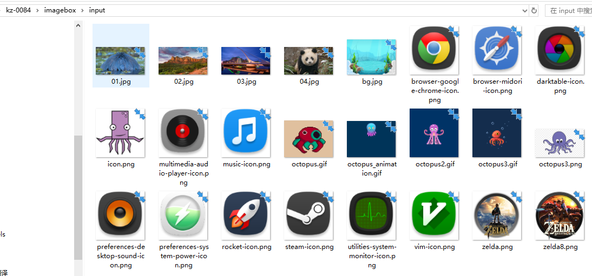
Make sure you have a Python interpreter installed on your computer. If you don't have one, you can download and install Python from the official website at python.org. During the installation process, ensure that the option to add Python to your system's PATH is selected. This will allow you to run Python from the command line.
If you have just installed the Python interpreter, you will need to install the Pillow library using the pip command. You can do this by running the following command in your terminal or command prompt:
For more detailed instructions, please refer to the documentation of the previous project.
Next, create a file named convert.py and fill it with the necessary code. Once the file is ready, execute it in your current environment by running:
If the process completes successfully, check the output directory to see if the corresponding *.bin files have been generated. If the files are successfully created, you can proceed with the subsequent steps.
Demo Code for Convertor
import os
from PIL import Image
def convert_to_rgb565(r, g, b):
return ((r & 0xF8) << 8) | ((g & 0xFC) << 3) | (b >> 3)
def convert_image(source_path, dest_path):
img = Image.open(source_path).convert("RGB")
img = img.resize((240, 240))
with open(dest_path, "wb") as f:
for y in range(img.height):
for x in range(img.width):
r, g, b = img.getpixel((x, y))
pixel = convert_to_rgb565(r, g, b)
f.write(pixel.to_bytes(2, 'big'))
def batch_convert(source_dir, dest_dir):
os.makedirs(dest_dir, exist_ok=True)
for filename in os.listdir(source_dir):
if filename.lower().endswith(('.png', '.jpg', '.jpeg')):
source = os.path.join(source_dir, filename)
dest = os.path.join(dest_dir, f"{os.path.splitext(filename)[0]}.bin")
convert_image(source, dest)
# convert the image
batch_convert("input", "output")
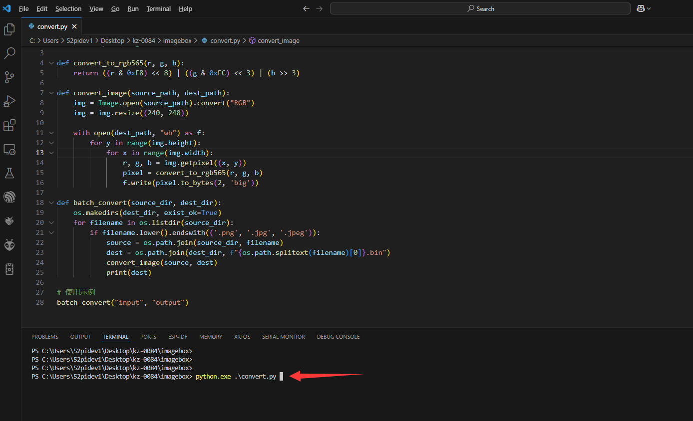
Convert images
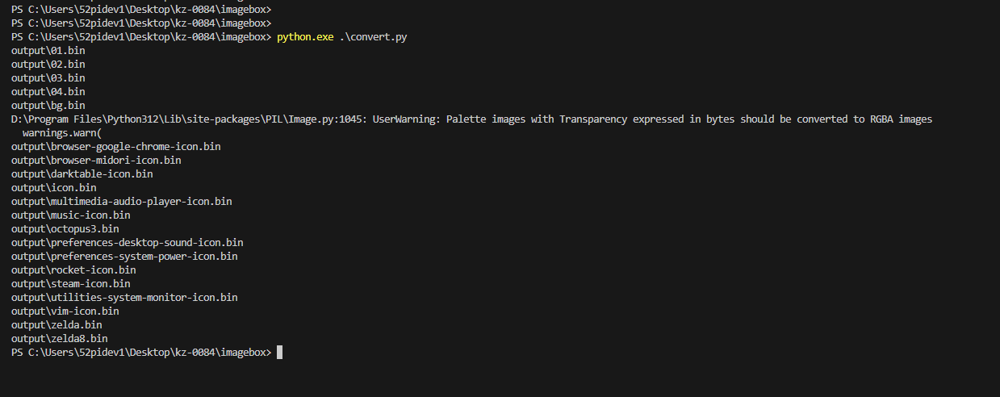
Check output folder
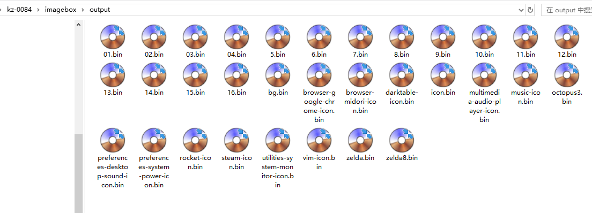
Upload converted binary file to Pico 2W
- Step.1 Open
ThonnyIDE and clickView, selectFiles.
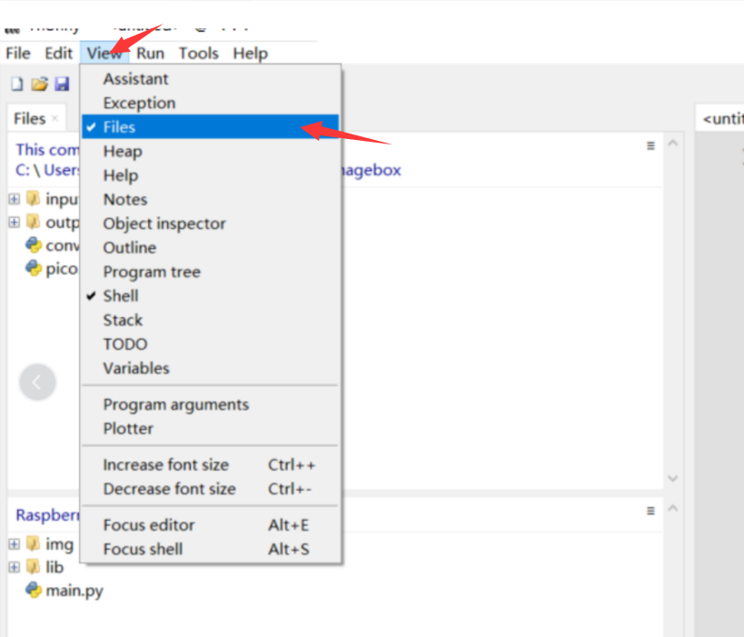
- Step.2 Navigate to binary files location.
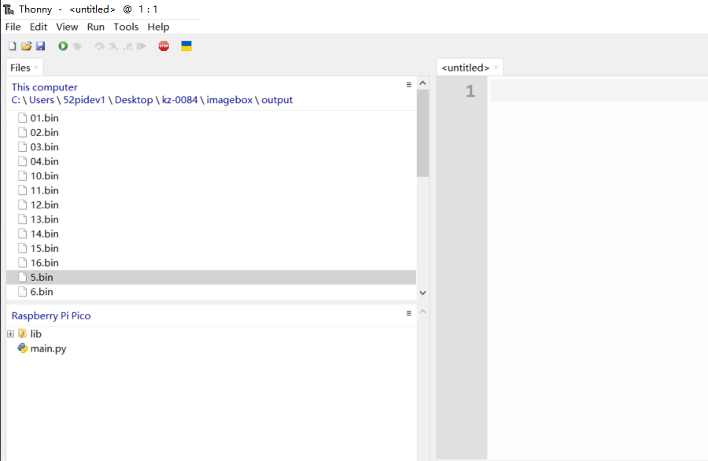
- Create a folder called
imgson Pico 2W
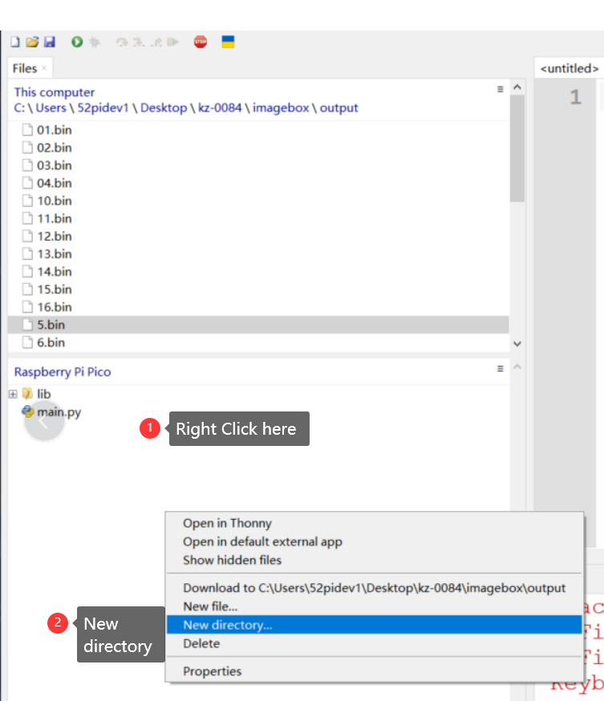
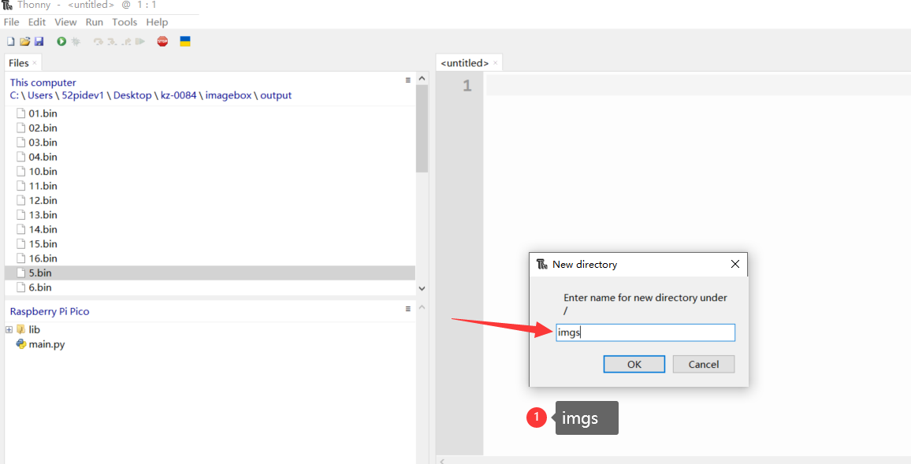
- Enter into
imgsfolder and upload the binary files into it.
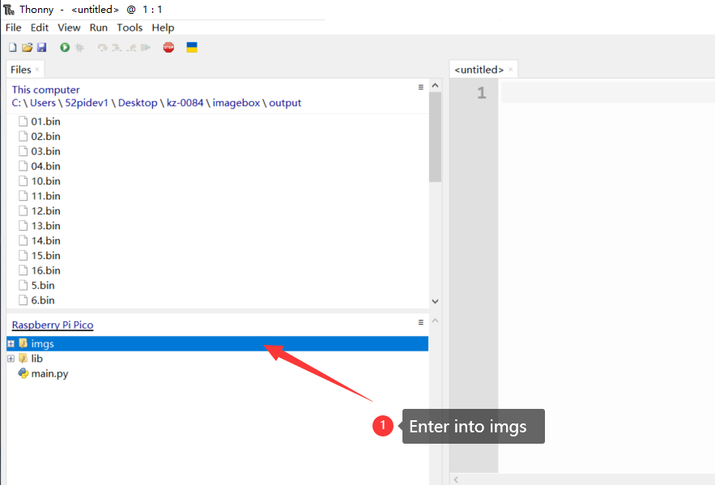
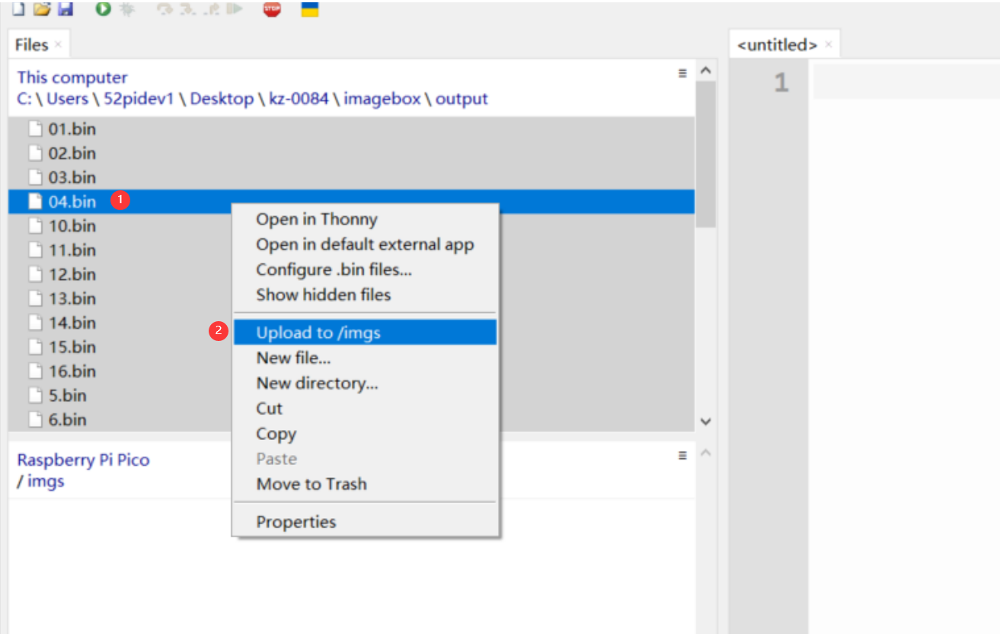
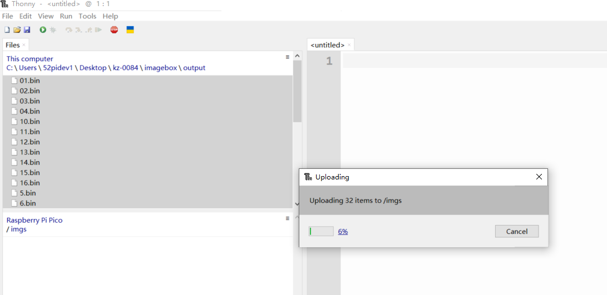
Move to next step, copy and paste following demo code into Raspberry Pi Pico 2W.
and save it to pico 2W, named it main.py.
Demo code
- On Raspberry Pi Pico 2W
import os
import time
from LCD import ST7789
def show_images():
lcd = ST7789() # Initialize the ST7789 LCD display driver
img_dir = "/imgs" # Define the directory where the image files are stored
while True: # Loop indefinitely to continuously display images
# Get all .bin files in the directory
files = [f for f in os.listdir(img_dir) if f.endswith(".bin")]
files.sort() # Sort the files by name
for filename in files: # Iterate through each file in the sorted list
filepath = f"{img_dir}/{filename}" # Construct the full file path
with open(filepath, "rb") as f: # Open the file in binary read mode
# Refresh line by line
for y in range(240): # Loop through each line (assuming 240 lines)
# Read one line of data (240 pixels * 2 bytes per pixel = 480 bytes)
line_data = f.read(480)
if not line_data: # If no data is read, break the loop
break
# Draw the current line (starting at y, with a height of 1 pixel)
lcd.fill(0, y, 240, 1, line_data) # Display the line on the LCD
time.sleep(1) # Display each image for 1 second
# Start the image display
show_images()
Image box
Code Explanation
The provided Python code is designed to display images stored as binary files on a display screen using the ST7789 LCD driver.
- Imports:
os: Used to interact with the operating system, specifically to list files in a directory.time: Provides thesleepfunction to introduce delays.-
ST7789fromLCD: This is a driver for the ST7789 LCD display, which handles the low-level operations of displaying images on the screen. -
Function Definition:
-
def show_images(): Defines a function to display images. -
Initialization:
lcd = ST7789(): Initializes the LCD display driver.-
img_dir = "/img": Specifies the directory where the binary image files are stored. -
Infinite Loop:
-
while True: Ensures that the image display process runs continuously. -
File Handling:
files = [f for f in os.listdir(img_dir) if f.endswith(".bin")]: Lists all files in the specified directory that have a.binextension.-
files.sort(): Sorts the files alphabetically by name. -
Image Display:
- The code iterates through each file in the sorted list.
- For each file, it opens the file in binary read mode.
- It reads the image data line by line (assuming each image is 240 lines high and each pixel is represented by 2 bytes).
- The
lcd.fillfunction is used to display each line of the image on the LCD screen. -
After displaying an image, the code pauses for 1 second using
time.sleep(1). -
Continuous Display:
- The
while Trueloop ensures that the process repeats indefinitely, continuously cycling through the images.
This code is designed for a specific hardware setup involving an ST7789 LCD display and assumes that the images are stored as binary files in the /img directory. It reads these files line by line and displays them on the screen, creating a simple image slideshow.
Experiment 13: Using PS2 Joystick
Application Scenario
This experiment demonstrates how to interface a PS2 joystick with a Raspberry Pi Pico 2W. The joystick will be used to control various applications, such as moving a cursor on a screen, navigating through menus, or controlling a robot.
Working Principle
The PS2 joystick communicates with the Raspberry Pi Pico 2W via analog and digital signals. The analog signals from the joystick's axes are read using the ADC (Analog to Digital Converter) pins on the Pico, while the digital signal from the joystick's button is read using a GPIO pin.
Circuit Wiring
Here's how to wire the PS2 joystick to the Raspberry Pi Pico 2W:
-
- Axis X: Connect to ADC pin 26 (GPIO 26)
-
- Axis Y: Connect to ADC pin 27 (GPIO 27)
-
- Button: Connect to GPIO pin 15
-
- VCC: Connect to 3.3V or 5V(VBUS) on the Pico
-
- GND: Connect to a Ground pin on the Pico
Details:
Circuit Diagram
PS2 Joystick Raspberry Pi Pico 2W
------------------ -------------------------
Axis X --> ADC 26 (GPIO 26)
Axis Y --> ADC 27 (GPIO 27)
Button --> GPIO 15
VCC --> 3.3V / 5V (VBUS)
GND --> GND
MicroPython Demo Code
from machine import Pin, ADC
import utime
# Initialize the ADC pins for the joystick axes
axis_x = ADC(26) # Axis X connected to ADC 26
axis_y = ADC(27) # Axis Y connected to ADC 27
# Initialize the GPIO pin for the joystick button
button = Pin(15, Pin.IN, Pin.PULL_UP) # Button connected to GPIO 15, with pull-up
def read_joystick():
# Read the X and Y axis values from the joystick
x_value = axis_x.read_u16() # Read the 16-bit value from X axis
y_value = axis_y.read_u16() # Read the 16-bit value from Y axis
return x_value, y_value
def read_button():
# Read the button state
return button.value() == 0 # Button is pressed if the value is 0 (active low)
while True:
# Read the joystick and button states
x, y = read_joystick()
button_pressed = read_button()
# Print the status information
print(f"Joystick X: {x}, Y: {y}, Button: {'Pressed' if button_pressed else 'Not Pressed'}")
# Simple logic demonstration
if button_pressed:
print("Button is pressed!")
else:
print("Button is not pressed.")
utime.sleep(0.1) # Small delay to avoid overwhelming the output
On Thonny IDE:
Code Explanation
- Initialization:
- The ADC pins for the joystick axes (X and Y) are initialized.
- The GPIO pin for the joystick button is set up as an input with a pull-up resistor.
- Reading Joystick:
- The
read_joystickfunction reads the 16-bit values from the ADC pins for the X and Y axes. - The
read_buttonfunction checks the state of the button by reading the GPIO pin. - Main Loop:
- The main loop continuously reads the joystick and button states and prints them.
- It also includes a simple logic to print a message when the button is pressed.
This experiment provides a basic demonstration of how to interface and use a PS2 joystick with a Raspberry Pi Pico 2W using MicroPython.
Experiment 14: MPU6050 Gyroscope and Accelerometer Module
Application Scenario
This experiment demonstrates how to interface an MPU6050 sensor module with a Raspberry Pi Pico 2W. The MPU6050, which includes a 3-axis gyroscope and a 3-axis accelerometer, can be used for various applications such as motion detection, orientation sensing, and robotics.
Working Principle
The MPU6050 communicates with the Raspberry Pi Pico 2W via the I2C protocol. It provides 6-axis motion tracking by combining the data from the accelerometer and gyroscope, allowing for precise motion and orientation detection.
Circuit Wiring
Here's how to wire the MPU6050 to the Raspberry Pi Pico 2W:
- VCC: Connect to 3.3V on the Pico
- GND: Connect to a Ground pin on the Pico
- SDA: Connect to GPIO 16 (SDA pin on Pico)
- SCL: Connect to GPIO 17 (SCL pin on Pico)
Circuit Diagram
MPU6050 Raspberry Pi Pico 2W
------------------ -------------------------
VCC (Pin 18) --> 3.3V
GND (Pin 19) --> GND
SDA (Pin 21) --> GPIO 16
SCL (Pin 22) --> GPIO 17
Demo Code
- Step 1. upload the
mpu6050.pylibrary to Raspberry Pi Pico 2WH as following figures:
Copy following codes into a new file and save it to /lib folder:
- full code of
mpu6050.py
import machine
class accel():
def __init__(self, i2c, addr=0x68):
self.iic = i2c
self.addr = addr
#self.iic.start()
self.iic.writeto(self.addr, bytearray([107, 0]))
#self.iic.stop()
def get_raw_values(self):
#self.iic.start()
a = self.iic.readfrom_mem(self.addr, 0x3B, 14)
#self.iic.stop()
return a
def get_ints(self):
b = self.get_raw_values()
c = []
for i in b:
c.append(i)
return c
def bytes_toint(self, firstbyte, secondbyte):
if not firstbyte & 0x80:
return firstbyte << 8 | secondbyte
return - (((firstbyte ^ 255) << 8) | (secondbyte ^ 255) + 1)
def get_values(self):
raw_ints = self.get_raw_values()
vals = {}
vals["AcX"] = self.bytes_toint(raw_ints[0], raw_ints[1])
vals["AcY"] = self.bytes_toint(raw_ints[2], raw_ints[3])
vals["AcZ"] = self.bytes_toint(raw_ints[4], raw_ints[5])
vals["Tmp"] = self.bytes_toint(raw_ints[6], raw_ints[7]) / 340.00 + 36.53
vals["GyX"] = self.bytes_toint(raw_ints[8], raw_ints[9])
vals["GyY"] = self.bytes_toint(raw_ints[10], raw_ints[11])
vals["GyZ"] = self.bytes_toint(raw_ints[12], raw_ints[13])
return vals # returned in range of Int16
# -32768 to 32767
def sleep(self):
self.iic.start()
self.iic.writeto_mem(self.addr, 0x6B, b'\x40')
self.iic.stop()
def wakeup(self):
from time import sleep
self.iic.start()
self.iic.writeto_mem(self.addr, 0x6B, b'\x80')
self.iic.stop()
sleep(0.05)
self.iic.start()
self.iic.writeto_mem(self.addr, 0x68, b'\x07')
self.iic.stop()
sleep(0.05)
self.iic.start()
self.iic.writeto_mem(self.addr, 0x68, b'\x00')
self.iic.stop()
sleep(0.05)
self.iic.start()
self.iic.writeto_mem(self.addr, 0x6B, b'\x00')
self.iic.stop()
def val_test(self): # ONLY FOR TESTING! Also, fast reading sometimes crashes IIC
from time import sleep
while 1:
print(self.get_values())
sleep(0.05)
select Raspberry Pi pico:
Navigate to lib folder:
Save it as mpu6050.py, please make sure the name is mpu6050.py, otherwise
your main code may not work properly.
Demo code
- Open a new file and copy and paste following code:
from machine import Pin, I2C
from time import sleep
from mpu6050 import accel
import math
imu_data = {}
imu_i2c = I2C(0, scl=Pin(17), sda=Pin(16))
imu = accel(imu_i2c)
def get_mpu_data():
"""get imu data from mpu6050"""
imu_data = imu.get_values()
ax = imu_data['AcX']
ay = imu_data['AcY']
az = imu_data['AcZ']
gx = imu_data['GyX']
gy = imu_data['GyY']
gz = imu_data['GyZ']
return ax, ay, az, gx, gy, gz
def calculate_roll_pitch(ax, ay, az):
""" calculate roll and pitch """
roll = math.atan2(ay, az) * 180.0 / math.pi
pitch = math.atan2(-ax, math.sqrt(ay * ay + az * az )) * 180.0 / math.pi
return roll, pitch
def calculate_yaw(gx, gy, gz, dt):
""" calculate yaw angle """
global yaw
yaw += gz * dt
yaw = (yaw + 360) % 360
return yaw
def main():
"""main loop"""
global yaw
yaw = 0 # init yaw angle to 0
dt = 0.05 # time interval in seconds
while True:
ax, ay, az, gx, gy, gz = get_mpu_data() # get data from mpu6050
roll, pitch = calculate_roll_pitch(ax, ay, az)
yaw = calculate_yaw(gx, gy, gz, dt)
print(f"Roll: {roll:.2f}°, Pitch: {pitch:.2f}°, Yaw:{yaw:.2f}°")
sleep(dt)
if __name__=="__main__":
main()
when the program running you will see the output like:
once you move the experiment platform, the data will be changed as following figure.
Code Explanation
1. Initialization
import machine
import math
from time import sleep
from mpu6050 import accel
i2c = machine.I2C(0, scl=machine.Pin(1), sda=machine.Pin(0), freq=400000)
mpu = accel(i2c)
machine.I2C: Initializes the I2C interface to connect to the MPU6050 sensor.
- scl and sda are the clock and data lines of the I2C interface.
- freq is the I2C communication frequency, typically set to 400kHz.
- accel(i2c): Initializes the sensor using the MPU6050 library.
2. Data Acquisition
def get_mpu_data():
data = mpu.get_values()
ax = data["AcX"]
ay = data["AcY"]
az = data["AcZ"]
gx = data["GyX"]
gy = data["GyY"]
gz = data["GyZ"]
return ax, ay, az, gx, gy, gz
mpu.get_values(): Retrieves the raw acceleration and gyroscope data from the MPU6050.
- AcX, AcY, AcZ are the acceleration data for the X, Y, and Z axes.
- GyX, GyY, GyZ are the gyroscope data for the X, Y, and Z axes.
- These values are 16-bit integers, with units of mg (acceleration) and °/s (gyroscope).
3. Calculating Roll and Pitch
def calculate_roll_pitch(ax, ay, az):
roll = math.atan2(ay, az) * 180.0 / math.pi
pitch = math.atan2(-ax, math.sqrt(ay * ay + az * az)) * 180.0 / math.pi
return roll, pitch
math.atan2(y, z): Calculates the arctangent value, returning the angle in radians.
- The roll (bank angle) formula is atan2(ay, az), representing the rotation around the X-axis.
- The pitch (tilt angle) formula is atan2(-ax, sqrt(ay * ay + az * az)), representing the rotation around the Y-axis.
- * 180.0 / math.pi: Converts the angle from radians to degrees.
4. Calculating Yaw
-yaw += gz * dt: Calculates the yaw angle by integrating the Z-axis gyroscope data.
- gz is the angular velocity of the Z-axis (unit: °/s), and dt is the time interval (unit: seconds).
- (yaw + 360) % 360: Ensures that the yaw angle remains within the range of 0 to 360 degrees.
5. Main Loop
def main():
global yaw
yaw = 0
dt = 0.05
while True:
ax, ay, az, gx, gy, gz = get_mpu_data()
roll, pitch = calculate_roll_pitch(ax, ay, az)
yaw = calculate_yaw(gx, gy, gz, dt)
print(f"Roll: {roll:.2f}°, Pitch: {pitch:.2f}°, Yaw: {yaw:.2f}°")
sleep(dt)
global yaw: Declares yaw as a global variable to share it between functions.
- dt: The time interval, which affects the sampling frequency.
- In the main loop:
- Retrieves the acceleration and gyroscope data from the MPU6050.
- Calculates the roll, pitch, and yaw angles.
- Prints the results and waits for the next sampling interval.
Notes
- Sensor Calibration: The MPU6050 should be calibrated before use to eliminate bias errors.
- Integration Drift: The yaw angle is calculated by integration and is prone to drift. In practical applications, it may be necessary to combine it with other sensors (such as a magnetometer) for correction.
- Sampling Frequency: The value of
dtaffects the calculation accuracy and response speed. It can be adjusted according to actual needs.
Experiment 15: Raindrop module
Application Scenario
The raindrop sensor can be used to detect the presence of raindrops or water. It is commonly used in weather stations, automated irrigation systems, and other applications where water detection is necessary.
Working Principle
The raindrop sensor typically consists of a pair of conductive surfaces that are exposed to the environment. When a raindrop falls onto these surfaces, it closes the circuit, allowing current to flow. This change in current can be detected by a microcontroller, such as the Raspberry Pi Pico, to indicate the presence of rain.
Circuit Wiring
To connect the raindrop sensor to the Raspberry Pi Pico, follow these steps:
- Connect the VCC pin of the raindrop sensor to a 3.3V power supply on the Raspberry Pi Pico.
- Connect the GND pin of the raindrop sensor to one of the ground (GND) pins on the Raspberry Pi Pico.
- Connect the OUT pin of the raindrop sensor to a GPIO pin on the Raspberry Pi Pico that supports digital input.
Here is an example wiring diagram:
Demo Code
from machine import Pin
import time
# Define the GPIO pin connected to the raindrop sensor's OUT pin
sensor_pin = Pin(0, Pin.IN)
def check_rain():
# Check if the raindrop sensor is triggered (i.e., the pin is low)
if sensor_pin.value() == 0:
print("Rain detected!")
else:
print("No rain detected.")
# Main loop
while True:
check_rain()
time.sleep(1) # Wait for 1 second before checking again
In Thonny IDE will be like:
Code Explanation
- Import Libraries: The
Pinclass frommachinemodule is imported to interact with GPIO pins, andtimemodule is imported to add delays. - Define GPIO Pin: A
Pinobject is created for the GPIO pin connected to the OUT pin of the raindrop sensor. The pin is configured as an input (Pin.IN). - check_rain Function: This function checks the state of the raindrop sensor. If the pin is low (indicating rain), it prints "Rain detected!". Otherwise, it prints "No rain detected."
- Main Loop: The
while Trueloop continuously checks for rain every second using thecheck_rainfunction. Thetime.sleep(1)function call pauses the program for 1 second between checks.
This setup allows the Raspberry Pi Pico to monitor the raindrop sensor and print a message whenever rain is detected.
Testing Result
when you drop a water on the sensor board will be like:
and the monitor on thonny IDE's output will be like:
Conclusion
These experiments provide a foundation for using the Raspberry Pi Pico 2 WH with various sensors and components. Feel free to modify the code and circuit to suit your needs and explore more advanced applications! Happy experimenting!
Support
If you encounter any issues or have questions while using the kit, please refer to the instruction manual or contact our support team for assistance. We are here to help you on your journey into the exciting world of electronics and programming! Happy experimenting with your Raspberry Pi Pico 2 WH Starter Kit!
Development in C/C++ Environment
The Raspberry Pi Pico series of development boards also supports the C/C++ programming environment. Although programming in C/C++ may increase the difficulty, it is more hardware-friendly at the lower level. The firmware developed is in the *.uf2 format, which is more convenient for distribution and sharing.
The advantages of the *.uf2 format for firmware include the following:
- Ease of Use and Distribution:
- The UF2 format is designed to be user-friendly, allowing firmware updates to be performed through simple drag-and-drop operations. This makes it accessible even to non-technical users.
-
It appears as a mass storage device (USB drive) when connected to a computer, enabling easy file transfer without the need for complex tools.
-
Robustness and Reliability:
- Each UF2 file consists of independent 512-byte blocks, which ensures that the microcontroller can receive complete blocks even if the file is transferred partially. This design improves the reliability of firmware updates.
-
The format includes magic numbers at the beginning and end of each block, which help the microcontroller identify and validate the UF2 blocks, reducing the risk of errors during the flashing process.
-
Compatibility and Flexibility:
- UF2 supports a wide range of microcontrollers and development boards, including the Raspberry Pi Pico. It also includes a family ID mechanism to ensure that firmware is compatible with the specific hardware it is intended for.
-
The format allows for additional features such as embedding source code or debug information within the UF2 file, which can be useful for development and debugging purposes.
-
Efficiency:
- The fixed block size and structure of UF2 files make the flashing process efficient and straightforward. The bootloader can quickly detect and process the blocks, reducing the time required for firmware updates.
Overall, the UF2 format simplifies the firmware update process, making it more reliable, user-friendly, and compatible with various hardware platforms.
The official documentation uses VSCode with plugins to set up the environment. From our tests, deploying this environment on a Linux system is very convenient and interesting. Now, let's set up a Pico SDK development environment on a Raspberry Pi running Linux and build a circuit to demonstrate a basic application for you!The official documentation uses VSCode with plugins to set up the environment. From our tests, deploying this environment on a Linux system is very convenient and interesting. Now, let's set up a Pico SDK development environment on a Raspberry Pi running Linux and build a circuit to demonstrate a basic application for you!
Download and install pico-sdk
- Make sure your Raspberry Pi can access internet.
- Open a terminal and typing following commands:
and then:
cd ~
wget
https://raw.githubusercontent.com/raspberrypi/pico-setup/refs/heads/master/pico_setup.sh
chmod +x pico_setup.sh
./pico_setup.sh
- looks like following figures:
- Reboot Raspberry Pi after the installation has been finished.